Dynamic threshold
Contents
Dynamic threshold¶
Work in progress.
In this notebook I experimented with the dynamic threshold (dth) model using the threshold dynamics described in the Adaptive LIF (ALIF) neuron model from the paper: https://arxiv.org/abs/2103.12593.
Two new hyperparameters are introduced:
\(τ_t\) as the time constant controlling the threshold dynamics
Set to be the same as \(\tau\) in the experiments
\(β\) controlling the size of adaptation of the threshold
Set to 1 in the experiments
Note that in addition to the threshold dynamics, the ALIF model in the paper also subtracts the threshold from the membrane potential instead of setting it to resting potential after a spike. Models using this method are denoted as subtraction models below and has sub in their tags.
Experiments done:
Original classification (oc), oc_sub, dth and dth_sub model in 20ms and 2ms
Results:
For 20ms case, the methods have similar performance
Oc_sub model sometimes performs worse than 20% acc, which is not seen in other models
In 2ms case:
Subtraction models lead to better performance
Dth is slightly worse than oc (similar median, slightly larger variation)
Dth_sub performs better than oc_sub
Further work:
Hyperparameter search to optimize \(τ_t\) and \(\beta\)
Optimize \(τ_t\) and \(\beta\) as trainable parameters
import os
import numpy as np
import matplotlib.pyplot as plt
from matplotlib.gridspec import GridSpec
import torch
import torch.nn as nn
import torch.nn.functional as F
dtype = torch.float
# Check whether a GPU is available
if torch.cuda.is_available():
device = torch.device("cuda")
else:
device = torch.device("cpu")
my_computer_is_slow = True # set this to True if using Colab
# Change this to your own path
from google.colab import drive
drive.mount('/content/drive', force_remount=True)
import os
os.chdir('/content/drive/Shareddrives/SNN_sound_localization/Results_stage2/oc_vs_dth')
# import os
# os.chdir('/root/research/SR/Results_stage2')
import pandas as pd
import seaborn as sns
from ast import literal_eval
Mounted at /content/drive
!ls
dth_sub_2ms_taut_acc_2ms.png dth_sub_2ms_taut_err.png oc_vs_dth_err_2ms.png
dth_sub_2ms_taut_acc_2ms.svg dth_sub_2ms_taut_err.svg oc_vs_dth_err_2ms.svg
dth_sub_2ms_taut_acc.png oc_vs_dth_acc_2ms.png oc_vs_dth_err.png
dth_sub_2ms_taut_acc.svg oc_vs_dth_acc_2ms.svg oc_vs_dth_err.svg
dth_sub_2ms_taut_err_2ms.png oc_vs_dth_acc.png opt_tau_t
dth_sub_2ms_taut_err_2ms.svg oc_vs_dth_acc.svg saved_results
Original Code From the Starting Notebook¶
Sound localization stimuli¶
The following function creates a set of stimuli that can be used for training or testing. We have two ears (0 and 1), and ear 1 will get a version of the signal delayed by an IPD we can write as \(\alpha\) in equations (ipd in code). The basic signal is a sine wave as in the previous notebook, made positive, so \((1/2)(1+\sin(\theta)\). In addition, for each ear there will be \(N_a\) neurons per ear (anf_per_ear because these are auditory nerve fibres). Each neuron generates Poisson spikes at a certain firing rate, and these Poisson spike trains are independent. In addition, since it is hard to train delays, we seed it with uniformly distributed delays from a minimum of 0 to a maximum of \(\pi/2\) in each ear, so that the differences between the two ears can cover the range of possible IPDs (\(-\pi/2\) to \(\pi/2\)). We do this directly by adding a phase delay to each neuron. So for ear \(i\in\{0,1\}\) and neuron \(j\) at time \(t\) the angle \(\theta=2\pi f t+i\alpha+j\pi/2N_a\). Finally, we generate Poisson spike trains with a rate \(R_\mathrm{max}((1/2)(1+\sin(\theta)))^k\). \(R_\mathrm{max}\) (rate_max) is the maximum instantaneous firing rate, and \(k\) (envelope_power) is a constant that sharpens the envelope. The higher \(R_\mathrm{max}\) and \(k\) the easier the problem (try it out on the cell below to see why).
Here’s a picture of the architecture for the stimuli:

The functions below return two arrays ipd and spikes. ipd is an array of length num_samples that gives the true IPD, and spikes is an array of 0 (no spike) and 1 (spike) of shape (num_samples, duration_steps, 2*anf_per_ear), where duration_steps is the number of time steps there are in the stimulus.
# Not using Brian so we just use these constants to make equations look nicer below
second = 1
ms = 1e-3
Hz = 1
# Stimulus and simulation parameters
dt = 1*ms # large time step to make simulations run faster for tutorial
anf_per_ear = 100 # repeats of each ear with independent noise
envelope_power = 2 # higher values make sharper envelopes, easier
rate_max = 600*Hz # maximum Poisson firing rate
f = 20*Hz # stimulus frequency
duration = .1*second # stimulus duration
duration_steps = int(np.round(duration/dt))
input_size = 2*anf_per_ear
# Generate an input signal (spike array) from array of true IPDs
def input_signal(ipd):
num_samples = len(ipd)
T = np.arange(duration_steps)*dt # array of times
phi = 2*np.pi*(f*T+np.random.rand()) # array of phases corresponding to those times with random offset
# each point in the array will have a different phase based on which ear it is
# and its delay
theta = np.zeros((num_samples, duration_steps, 2*anf_per_ear))
# for each ear, we have anf_per_ear different phase delays from to pi/2 so
# that the differences between the two ears can cover the full range from -pi/2 to pi/2
phase_delays = np.linspace(0, np.pi/2, anf_per_ear)
# now we set up these theta to implement that. Some numpy vectorisation logic here which looks a little weird,
# but implements the idea in the text above.
theta[:, :, :anf_per_ear] = phi[np.newaxis, :, np.newaxis]+phase_delays[np.newaxis, np.newaxis, :]
theta[:, :, anf_per_ear:] = phi[np.newaxis, :, np.newaxis]+phase_delays[np.newaxis, np.newaxis, :]+ipd[:, np.newaxis, np.newaxis]
# now generate Poisson spikes at the given firing rate as in the previous notebook
spikes = np.random.rand(num_samples, duration_steps, 2*anf_per_ear)<rate_max*dt*(0.5*(1+np.sin(theta)))**envelope_power
return spikes
# Generate some true IPDs from U(-pi/2, pi/2) and corresponding spike arrays
def random_ipd_input_signal(num_samples, tensor=True):
ipd = np.random.rand(num_samples)*np.pi-np.pi/2 # uniformly random in (-pi/2, pi/2)
spikes = input_signal(ipd)
if tensor:
ipd = torch.tensor(ipd, device=device, dtype=dtype)
spikes = torch.tensor(spikes, device=device, dtype=dtype)
return ipd, spikes
# Plot a few just to show how it looks
ipd, spikes = random_ipd_input_signal(8)
spikes = spikes.cpu()
plt.figure(figsize=(10, 4), dpi=100)
for i in range(8):
plt.subplot(2, 4, i+1)
plt.imshow(spikes[i, :, :].T, aspect='auto', interpolation='nearest', cmap=plt.cm.gray_r)
plt.title(f'True IPD = {int(ipd[i]*180/np.pi)} deg')
if i>=4:
plt.xlabel('Time (steps)')
if i%4==0:
plt.ylabel('Input neuron index')
plt.tight_layout()

Now the aim is to take these input spikes and infer the IPD. We can do this either by discretising and using a classification approach, or with a regression approach. For the moment, let’s try it with a classification approach.
Classification approach¶
We discretise the IPD range of \([-\pi/2, \pi/2]\) into \(N_c\) (num_classes) equal width segments. Replace angle \(\phi\) with the integer part (floor) of \((\phi+\pi/2)N_c/\pi\). We also convert the arrays into PyTorch tensors for later use. The algorithm will now guess the index \(i\) of the segment, converting that to the midpoint of the segment \(\phi_i=a+(i+1/2)(b-a)/N_c\) when needed.
The algorithm will work by outputting a length \(N_c\) vector \(y\) and the index of the maximum value of y will be the guess as to the class (1-hot encoding), i.e. \(i_\mathrm{est}=\mathrm{argmax}_i y_i\). We will perform the training with a softmax and negative loss likelihood loss, which is a standard approach in machine learning.
# classes at 15 degree increments
num_classes = 180//15
print(f'Number of classes = {num_classes}')
def discretise(ipds):
return ((ipds+np.pi/2)*num_classes/np.pi).long() # assumes input is tensor
def continuise(ipd_indices): # convert indices back to IPD midpoints
return (ipd_indices+0.5)/num_classes*np.pi-np.pi/2
Number of classes = 12
Membrane only (no spiking neurons)¶
Before we get to spiking, we’re going to warm up with a non-spiking network that shows some of the features of the full model but without any coincidence detection, it can’t do the task. We basically create a neuron model that has everything except spiking, so the membrane potential dynamics are there and it takes spikes as input. The neuron model we’ll use is just the LIF model we’ve already seen. We’ll use a time constant \(\tau\) of 20 ms, and we pre-calculate a constant \(\alpha=\exp(-dt/\tau)\) so that updating the membrane potential \(v\) is just multiplying by \(\alpha\) (as we saw in the first notebook). We store the input spikes in a vector \(s\) of 0s and 1s for each time step, and multiply by the weight matrix \(W\) to get the input, i.e. \(v\leftarrow \alpha v+Ws\).
We initialise the weight matrix \(W\) uniformly with bounds proportionate to the inverse square root of the number of inputs (fairly standard, and works here).
The output of this will be a vector of \(N_c\) (num_classes) membrane potential traces. We sum these traces over time and use this as the output vector (the largest one will be our prediction of the class and therefore the IPD).

# Weights and uniform weight initialisation
def init_weight_matrix():
# Note that the requires_grad=True argument tells PyTorch that we'll be computing gradients with
# respect to the values in this tensor and thereby learning those values. If you want PyTorch to
# learn some gradients, make sure it has this on.
W = nn.Parameter(torch.empty((input_size, num_classes), device=device, dtype=dtype, requires_grad=True))
fan_in, _ = nn.init._calculate_fan_in_and_fan_out(W)
bound = 1 / np.sqrt(fan_in)
nn.init.uniform_(W, -bound, bound)
return W
# Run the simulation
def membrane_only(input_spikes, W, tau=20*ms):
# Input has shape (batch_size, duration_steps, input_size)
v = torch.zeros((batch_size, num_classes), device=device, dtype=dtype)
# v_rec will store the membrane in each time step
v_rec = [v]
# Batch matrix multiplication all time steps
# Equivalent to matrix multiply input_spikes[b, :, :] x W for all b, but faster
h = torch.einsum("abc,cd->abd", (input_spikes, W))
# precalculate multiplication factor
alpha = np.exp(-dt/tau)
# Update membrane and spikes one time step at a time
for t in range(duration_steps - 1):
v = alpha*v + h[:, t, :]
v_rec.append(v)
# return the recorded membrane potentials stacked into a single tensor
v_rec = torch.stack(v_rec, dim=1) # (batch_size, duration_steps, num_classes)
return v_rec
Training¶
We train this by dividing the input data into batches and computing gradients across batches. In this notebook, batch and data size is small so that it can be run on a laptop in a couple of minutes, but normally you’d use larger batches and more data. Let’s start with the data.
# Parameters for training. These aren't optimal, but instead designed
# to give a reasonable result in a small amount of time for the tutorial!
if my_computer_is_slow:
batch_size = 64
n_training_batches = 64
else:
batch_size = 128
n_training_batches = 128
n_testing_batches = 32
num_samples = batch_size*n_training_batches
# Generator function iterates over the data in batches
# We randomly permute the order of the data to improve learning
def data_generator(ipds, spikes):
perm = torch.randperm(spikes.shape[0])
spikes = spikes[perm, :, :]
ipds = ipds[perm]
n, _, _ = spikes.shape
n_batch = n//batch_size
for i in range(n_batch):
x_local = spikes[i*batch_size:(i+1)*batch_size, :, :]
y_local = ipds[i*batch_size:(i+1)*batch_size]
yield x_local, y_local
Now we run the training. We generate the training data, initialise the weight matrix, set the training parameters, and run for a few epochs, printing the training loss as we go. We use the all-powerful Adam optimiser, softmax and negative log likelihood loss.
# Training parameters
nb_epochs = 10 # quick, it won't have converged
lr = 0.01 # learning rate
# Generate the training data
ipds, spikes = random_ipd_input_signal(num_samples)
# Initialise a weight matrix
W = init_weight_matrix()
# Optimiser and loss function
optimizer = torch.optim.Adam([W], lr=lr)
log_softmax_fn = nn.LogSoftmax(dim=1)
loss_fn = nn.NLLLoss() # negative log likelihood loss
print(f"Want loss for epoch 1 to be about {-np.log(1/num_classes):.2f}, multiply m by constant to get this")
loss_hist = []
for e in range(nb_epochs):
local_loss = []
for x_local, y_local in data_generator(discretise(ipds), spikes):
# Run network
output = membrane_only(x_local, W)
# Compute cross entropy loss
m = torch.sum(output, 1)*0.01 # Sum time dimension
loss = loss_fn(log_softmax_fn(m), y_local)
local_loss.append(loss.item())
# Update gradients
optimizer.zero_grad()
loss.backward()
optimizer.step()
loss_hist.append(np.mean(local_loss))
print("Epoch %i: loss=%.5f"%(e+1, np.mean(local_loss)))
# Plot the loss function over time
plt.plot(loss_hist)
plt.xlabel('Epoch')
plt.ylabel('Loss')
plt.tight_layout()
Want loss for epoch 1 to be about 2.48, multiply m by constant to get this
Epoch 1: loss=6.30739
Epoch 2: loss=3.12158
Epoch 3: loss=2.90743
Epoch 4: loss=2.64192
Epoch 5: loss=2.45578
Epoch 6: loss=2.40789
Epoch 7: loss=2.31922
Epoch 8: loss=2.16295
Epoch 9: loss=2.20243
Epoch 10: loss=2.05727

Analysis of results¶
Now we compute the training and test accuracy, and plot histograms and confusion matrices to understand the errors it’s making.
def analyse(ipds, spikes, label, run):
accs = []
ipd_true = []
ipd_est = []
confusion = np.zeros((num_classes, num_classes))
for x_local, y_local in data_generator(ipds, spikes):
y_local_orig = y_local
y_local = discretise(y_local)
output = run(x_local)
m = torch.sum(output, 1) # Sum time dimension
_, am = torch.max(m, 1) # argmax over output units
tmp = np.mean((y_local == am).detach().cpu().numpy()) # compare to labels
for i, j in zip(y_local.detach().cpu().numpy(), am.detach().cpu().numpy()):
confusion[j, i] += 1
ipd_true.append(y_local_orig.detach().cpu().numpy())
ipd_est.append(continuise(am.detach().cpu().numpy()))
accs.append(tmp)
ipd_true = np.hstack(ipd_true)
ipd_est = np.hstack(ipd_est)
abs_errors_deg = abs(ipd_true-ipd_est)*180/np.pi
print()
print(f"{label} classifier accuracy: {100*np.mean(accs):.1f}%")
print(f"{label} absolute error: {np.mean(abs_errors_deg):.1f} deg")
plt.figure(figsize=(10, 4), dpi=100)
plt.subplot(121)
plt.hist(ipd_true*180/np.pi, bins=num_classes, label='True')
plt.hist(ipd_est*180/np.pi, bins=num_classes, label='Estimated')
plt.xlabel("IPD")
plt.yticks([])
plt.legend(loc='best')
plt.title(label)
plt.subplot(122)
confusion /= np.sum(confusion, axis=0)[np.newaxis, :]
plt.imshow(confusion, interpolation='nearest', aspect='auto', origin='lower', extent=(-90, 90, -90, 90))
plt.xlabel('True IPD')
plt.ylabel('Estimated IPD')
plt.title('Confusion matrix')
plt.tight_layout()
print(f"Chance accuracy level: {100*1/num_classes:.1f}%")
run_func = lambda x: membrane_only(x, W)
analyse(ipds, spikes, 'Train', run=run_func)
ipds_test, spikes_test = random_ipd_input_signal(batch_size*n_testing_batches)
analyse(ipds_test, spikes_test, 'Test', run=run_func)
Chance accuracy level: 8.3%
Train classifier accuracy: 36.3%
Train absolute error: 16.1 deg
Test classifier accuracy: 9.4%
Test absolute error: 57.2 deg


This poor performance isn’t surprising because this network is not actually doing any coincidence detection, just a weighted sum of input spikes.
Spiking model¶
Next we’ll implement a version of the model with spikes to see how that changes performance. We’ll just add a single hidden feed-forward layer of spiking neurons between the input and the output layers. This layer will be spiking, so we need to use the surrogate gradient descent approach.

Surrogate gradient descent¶
First, this is the key part of surrogate gradient descent, a function where we override the computation of the gradient to replace it with a smoothed gradient. You can see that in the forward pass (method forward) it returns the Heaviside function of the input (takes value 1 if the input is >0) or value 0 otherwise. In the backwards pass, it returns the gradient of a sigmoid function.
beta = 5
class SurrGradSpike(torch.autograd.Function):
@staticmethod
def forward(ctx, input):
ctx.save_for_backward(input)
out = torch.zeros_like(input)
out[input > 0] = 1.0
return out
@staticmethod
def backward(ctx, grad_output):
input, = ctx.saved_tensors
# Original SPyTorch/SuperSpike gradient
# This seems to be a typo or error? But it works well
#grad = grad_output/(100*torch.abs(input)+1.0)**2
# Sigmoid
grad = grad_output*beta*torch.sigmoid(beta*input)*(1-torch.sigmoid(beta*input))
return grad
spike_fn = SurrGradSpike.apply
Updated model¶
The code for the updated model is very similar to the membrane only layer. First, for initialisation we now need two weight matrices, \(W_1\) from the input to the hidden layer, and \(W_2\) from the hidden layer to the output layer. Second, we run two passes of the loop that you saw above for the membrane only model.
The first pass computes the output spikes of the hidden layer. The second pass computes the output layer and is exactly the same as before except using the spikes from the hidden layer instead of the input layer.
For the first pass, we modify the function in two ways.
Firstly, we compute the spikes with the line s = spike_fn(v-1). In the forward pass this just computes the Heaviside function of \(v-1\), i.e. returns 1 if \(v>1\), otherwise 0, which is the spike threshold function for the LIF neuron. In the backwards pass, it returns a gradient of the smoothed version of the Heaviside function.
The other line we change is the membrane potential update line. Now, we multiply by \(1-s\) where (\(s=1\) if there was a spike in the previous time step, otherwise \(s=0\)), so that the membrane potential is reset to 0 after a spike (but in a differentiable way rather than just setting it to 0).
num_hidden = 30
# Weights and uniform weight initialisation
def init_weight_matrices():
# Input to hidden layer
W1 = nn.Parameter(torch.empty((input_size, num_hidden), device=device, dtype=dtype, requires_grad=True))
fan_in, _ = nn.init._calculate_fan_in_and_fan_out(W)
bound = 1 / np.sqrt(fan_in)
nn.init.uniform_(W1, -bound, bound)
# Hidden layer to output
W2 = nn.Parameter(torch.empty((num_hidden, num_classes), device=device, dtype=dtype, requires_grad=True))
fan_in, _ = nn.init._calculate_fan_in_and_fan_out(W)
bound = 1 / np.sqrt(fan_in)
nn.init.uniform_(W2, -bound, bound)
return W1, W2
# Run the simulation
def snn(input_spikes, W1, W2, tau=20*ms):
# First layer: input to hidden
v = torch.zeros((batch_size, num_hidden), device=device, dtype=dtype)
s = torch.zeros((batch_size, num_hidden), device=device, dtype=dtype)
s_rec = [s]
h = torch.einsum("abc,cd->abd", (input_spikes, W1))
alpha = np.exp(-dt/tau)
for t in range(duration_steps - 1):
new_v = (alpha*v + h[:, t, :])*(1-s) # multiply by 0 after a spike
s = spike_fn(v-1) # threshold of 1
v = new_v
s_rec.append(s)
s_rec = torch.stack(s_rec, dim=1)
# Second layer: hidden to output
v = torch.zeros((batch_size, num_classes), device=device, dtype=dtype)
s = torch.zeros((batch_size, num_classes), device=device, dtype=dtype)
v_rec = [v]
h = torch.einsum("abc,cd->abd", (s_rec, W2))
alpha = np.exp(-dt/tau)
for t in range(duration_steps - 1):
v = alpha*v + h[:, t, :]
v_rec.append(v)
v_rec = torch.stack(v_rec, dim=1)
# Return recorded membrane potential of output
return v_rec
Training and analysing¶
We train it as before, except that we modify the functions to take the two weight matrices into account.
# Training parameters
nb_epochs = 10 # quick, it won't have converged
lr = 0.01 # learning rate
# Generate the training data
ipds, spikes = random_ipd_input_signal(num_samples)
# Initialise a weight matrices
W1, W2 = init_weight_matrices()
# Optimiser and loss function
optimizer = torch.optim.Adam([W1, W2], lr=lr)
log_softmax_fn = nn.LogSoftmax(dim=1)
loss_fn = nn.NLLLoss()
print(f"Want loss for epoch 1 to be about {-np.log(1/num_classes):.2f}, multiply m by constant to get this")
loss_hist = []
for e in range(nb_epochs):
local_loss = []
for x_local, y_local in data_generator(discretise(ipds), spikes):
# Run network
output = snn(x_local, W1, W2)
# Compute cross entropy loss
m = torch.mean(output, 1) # Mean across time dimension
loss = loss_fn(log_softmax_fn(m), y_local)
local_loss.append(loss.item())
# Update gradients
optimizer.zero_grad()
loss.backward()
optimizer.step()
loss_hist.append(np.mean(local_loss))
print("Epoch %i: loss=%.5f"%(e+1, np.mean(local_loss)))
# Plot the loss function over time
plt.plot(loss_hist)
plt.xlabel('Epoch')
plt.ylabel('Loss')
plt.tight_layout()
Want loss for epoch 1 to be about 2.48, multiply m by constant to get this
Epoch 1: loss=2.07820
Epoch 2: loss=1.38058
Epoch 3: loss=1.08499
Epoch 4: loss=0.92522
Epoch 5: loss=0.85050
Epoch 6: loss=0.77508
Epoch 7: loss=0.69778
Epoch 8: loss=0.64543
Epoch 9: loss=0.64462
Epoch 10: loss=0.61308

You might already see that the loss functions are lower than before, so maybe performance is better? Let’s see.
# Analyse
print(f"Chance accuracy level: {100*1/num_classes:.1f}%")
run_func = lambda x: snn(x, W1, W2)
analyse(ipds, spikes, 'Train', run=run_func)
ipds_test, spikes_test = random_ipd_input_signal(batch_size*n_testing_batches)
analyse(ipds_test, spikes_test, 'Test', run=run_func)
Chance accuracy level: 8.3%
Train classifier accuracy: 78.2%
Train absolute error: 5.2 deg
Test classifier accuracy: 60.7%
Test absolute error: 7.8 deg


Yes! Performance is much better and now the confusion matrices look more like what you’d expect too. Let’s take a look at the weight matrices.
plt.figure(figsize=(10, 4), dpi=100)
plt.subplot(121)
plt.imshow(W1.detach().cpu().numpy(), interpolation='nearest', aspect='auto', origin='lower')
plt.ylabel('Input neuron index')
plt.xlabel('Hidden layer neuron index')
plt.colorbar(label="Weight")
plt.subplot(122)
plt.imshow(W2.detach().cpu().numpy(), interpolation='nearest', aspect='auto', origin='lower')
plt.ylabel('Hidden layer neuron index')
plt.xlabel('Output neuron index')
plt.colorbar(label="Weight")
plt.tight_layout()

Hmm, hard to interpret.
Here’s what I’ve got so far…
w1 = W1.detach().cpu().numpy()
w2 = W2.detach().cpu().numpy()
# for each column of w1, compute the weighted mean and re-order according to that
A = np.arange(w1.shape[0])[:, None]
weighted_mean = np.mean((A*w1), axis=0)
weighted_mean[np.max(np.abs(w1), axis=0)<.5] = np.inf
I = np.argsort(weighted_mean)
w1 = w1[:, I]
w2 = w2[I, :]
# Plot the re-ordered weight matrices
plt.figure(figsize=(10, 3), dpi=100)
plt.subplot(131)
plt.imshow(w1, interpolation='nearest', aspect='auto', origin='lower')
plt.ylabel('Input neuron index')
plt.xlabel('Hidden layer neuron index')
plt.title('$W_1$')
plt.colorbar()
plt.subplot(132)
plt.imshow(w2, interpolation='nearest', aspect='auto', origin='lower')
plt.ylabel('Hidden layer neuron index')
plt.xlabel('Output neuron index')
plt.title('$W_2$')
plt.colorbar()
plt.subplot(133)
plt.imshow(w1@w2, interpolation='nearest', aspect='auto', origin='lower')
plt.ylabel('Input neuron index')
plt.xlabel('Output neuron index')
plt.title('$W_1W_2$')
plt.colorbar()
plt.tight_layout()
# Plot some sample weights for hidden neurons
I_nz, = (np.max(np.abs(w1), axis=0)>.5).nonzero()
plt.figure(figsize=(10, 5), dpi=80)
phi = np.linspace(-np.pi/2, np.pi/2, w1.shape[0]//2)
for i, j in list(enumerate(I_nz))[:15]:
plt.subplot(3, 5, i+1)
plt.plot(phi*180/np.pi, w1[:w1.shape[0]//2, j], label="Left ear")
plt.plot(phi*180/np.pi, w1[w1.shape[0]//2:, j], label="Right ear")
plt.suptitle("Individual $W_1$ weights")
plt.legend(loc='best')
plt.xlabel('Phase delay (deg)')
plt.tight_layout()


Experiments¶
Code necessary to run experiments¶
Note: I copied some cells from previous parts that are necessary for experiments here so that I don’t have to look for and run them from the part above again and again.
Necessary constants
# Not using Brian so we just use these constants to make equations look nicer below
second = 1
ms = 1e-3
Hz = 1
# Stimulus and simulation parameters
dt = 1*ms # large time step to make simulations run faster for tutorial
anf_per_ear = 100 # repeats of each ear with independent noise
envelope_power = 2 # higher values make sharper envelopes, easier
rate_max = 600*Hz # maximum Poisson firing rate
f = 20*Hz # stimulus frequency
duration = .1*second # stimulus duration
duration_steps = int(np.round(duration/dt))
input_size = 2*anf_per_ear
Generating input signal
# Generate an input signal (spike array) from array of true IPDs
def input_signal(ipd):
num_samples = len(ipd)
T = np.arange(duration_steps)*dt # array of times
phi = 2*np.pi*(f*T+np.random.rand()) # array of phases corresponding to those times with random offset
# each point in the array will have a different phase based on which ear it is
# and its delay
theta = np.zeros((num_samples, duration_steps, 2*anf_per_ear))
# for each ear, we have anf_per_ear different phase delays from to pi/2 so
# that the differences between the two ears can cover the full range from -pi/2 to pi/2
phase_delays = np.linspace(0, np.pi/2, anf_per_ear)
# now we set up these theta to implement that. Some numpy vectorisation logic here which looks a little weird,
# but implements the idea in the text above.
theta[:, :, :anf_per_ear] = phi[np.newaxis, :, np.newaxis]+phase_delays[np.newaxis, np.newaxis, :]
theta[:, :, anf_per_ear:] = phi[np.newaxis, :, np.newaxis]+phase_delays[np.newaxis, np.newaxis, :]+ipd[:, np.newaxis, np.newaxis]
# now generate Poisson spikes at the given firing rate as in the previous notebook
spikes = np.random.rand(num_samples, duration_steps, 2*anf_per_ear)<rate_max*dt*(0.5*(1+np.sin(theta)))**envelope_power
return spikes
# Generate some true IPDs from U(-pi/2, pi/2) and corresponding spike arrays
def random_ipd_input_signal(num_samples, tensor=True):
ipd = np.random.rand(num_samples)*np.pi-np.pi/2 # uniformly random in (-pi/2, pi/2)
spikes = input_signal(ipd)
if tensor:
ipd = torch.tensor(ipd, device=device, dtype=dtype)
spikes = torch.tensor(spikes, device=device, dtype=dtype)
return ipd, spikes
# Plot a few just to show how it looks
ipd, spikes = random_ipd_input_signal(8)
spikes = spikes.cpu()
plt.figure(figsize=(10, 4), dpi=100)
for i in range(8):
plt.subplot(2, 4, i+1)
plt.imshow(spikes[i, :, :].T, aspect='auto', interpolation='nearest', cmap=plt.cm.gray_r)
plt.title(f'True IPD = {int(ipd[i]*180/np.pi)} deg')
if i>=4:
plt.xlabel('Time (steps)')
if i%4==0:
plt.ylabel('Input neuron index')
plt.tight_layout()
# Parameters for training. These aren't optimal, but instead designed
# to give a reasonable result in a small amount of time for the tutorial!
if my_computer_is_slow:
batch_size = 64
n_training_batches = 64
else:
batch_size = 128
n_training_batches = 128
n_testing_batches = 32
num_samples = batch_size*n_training_batches
# Generator function iterates over the data in batches
# We randomly permute the order of the data to improve learning
def data_generator(ipds, spikes):
perm = torch.randperm(spikes.shape[0])
spikes = spikes[perm, :, :]
ipds = ipds[perm]
n, _, _ = spikes.shape
n_batch = n//batch_size
for i in range(n_batch):
x_local = spikes[i*batch_size:(i+1)*batch_size, :, :]
y_local = ipds[i*batch_size:(i+1)*batch_size]
yield x_local, y_local
Surrogate Gradient Descent
beta = 5
class SurrGradSpike(torch.autograd.Function):
@staticmethod
def forward(ctx, input):
ctx.save_for_backward(input)
out = torch.zeros_like(input)
out[input > 0] = 1.0
return out
@staticmethod
def backward(ctx, grad_output):
input, = ctx.saved_tensors
# Original SPyTorch/SuperSpike gradient
# This seems to be a typo or error? But it works well
#grad = grad_output/(100*torch.abs(input)+1.0)**2
# Sigmoid
grad = grad_output*beta*torch.sigmoid(beta*input)*(1-torch.sigmoid(beta*input))
if torch.any(torch.isnan(grad)):
import ipdb;ipdb.set_trace()
return grad
spike_fn = SurrGradSpike.apply
Discretise input for classification
def discretise(ipds):
return ((ipds+np.pi/2)*num_classes/np.pi).long() # assumes input is tensor
def continuise(ipd_indices): # convert indices back to IPD midpoints
return (ipd_indices+0.5)/num_classes*np.pi-np.pi/2
Function to analyse classification results
def analyse(ipds, spikes, label, run):
accs = []
ipd_true = []
ipd_est = []
confusion = np.zeros((num_classes, num_classes))
for x_local, y_local in data_generator(ipds, spikes):
y_local_orig = y_local
y_local = discretise(y_local)
output = run(x_local)
m = torch.sum(output, 1) # Sum time dimension
_, am = torch.max(m, 1) # argmax over output units
tmp = np.mean((y_local == am).detach().cpu().numpy()) # compare to labels
for i, j in zip(y_local.detach().cpu().numpy(), am.detach().cpu().numpy()):
confusion[j, i] += 1
ipd_true.append(y_local_orig.detach().cpu().numpy())
ipd_est.append(continuise(am.detach().cpu().numpy()))
accs.append(tmp)
ipd_true = np.hstack(ipd_true)
ipd_est = np.hstack(ipd_est)
abs_errors_deg = abs(ipd_true-ipd_est)*180/np.pi
print()
print(f"{label} classifier accuracy: {100*np.mean(accs):.1f}%")
print(f"{label} absolute error: {np.mean(abs_errors_deg):.1f} deg")
# plt.figure(figsize=(10, 4), dpi=100)
# plt.subplot(121)
# plt.hist(ipd_true*180/np.pi, bins=num_classes, label='True')
# plt.hist(ipd_est*180/np.pi, bins=num_classes, label='Estimated')
# plt.xlabel("IPD")
# plt.yticks([])
# plt.legend(loc='best')
# plt.title(label)
# plt.subplot(122)
# confusion /= np.sum(confusion, axis=0)[np.newaxis, :]
# plt.imshow(confusion, interpolation='nearest', aspect='auto', origin='lower', extent=(-90, 90, -90, 90))
# plt.xlabel('True IPD')
# plt.ylabel('Estimated IPD')
# plt.title('Confusion matrix')
# plt.tight_layout()
return 100*np.mean(accs), np.mean(abs_errors_deg)
def analyse_reg(ipds, spikes, label, run):
ipd_true = []
ipd_est = []
for x_local, y_local in data_generator(ipds, spikes):
y_local_orig = y_local
output = run(x_local)
am = torch.mean(output, 1).flatten()
ipd_true.append(y_local_orig.detach().cpu().numpy())
ipd_est.append(am.detach().cpu().numpy())
ipd_true = np.hstack(ipd_true)
ipd_est = np.hstack(ipd_est)
abs_errors_deg = abs(ipd_true-ipd_est)*180/np.pi
print()
print(f"{label} absolute error: {np.mean(abs_errors_deg):.1f} deg")
return np.mean(abs_errors_deg)
Models¶
Original¶
def snn_init(shape):
W = nn.Parameter(torch.empty((shape), device=device, dtype=dtype, requires_grad=True))
fan_in, _ = nn.init._calculate_fan_in_and_fan_out(W)
bound = 1 / np.sqrt(fan_in)
nn.init.uniform_(W, -bound, bound)
return W
class snn_layer(nn.Module):
def __init__(self, in_size, out_size, spike=True, tau=20*ms, reset=True):
super().__init__()
self.in_size = in_size
self.out_size = out_size
self.spike = spike
self.tau = tau
self.W = snn_init((in_size, out_size))
self.reset = reset
def forward(self, input_spikes, fn=spike_fn):
batch_size = input_spikes.shape[0]
v = torch.zeros((batch_size, self.out_size), device=device, dtype=dtype)
s = torch.zeros((batch_size, self.out_size), device=device, dtype=dtype)
h = torch.einsum("abc,cd->abd", (input_spikes, self.W))
alpha = np.exp(-dt/self.tau)
if self.spike: # spiking neuron
s_rec = [s]
v_rec = [v]
for t in range(duration_steps - 1):
if self.reset: # reset membrane potential to rest
new_v = (alpha*v + h[:, t, :])*(1-s) # multiply by 0 after a spike
else: # subtract threshold from membrane potential
new_v = (alpha*v + h[:, t, :]) - s
s = fn(v-1) # threshold of 1
v = new_v
s_rec.append(s)
v_rec.append(v)
s_rec = torch.stack(s_rec, dim=1)
v_rec = torch.stack(v_rec, dim=1)
return s_rec#, v_rec
else: # membrane only
v_rec = [v]
for t in range(duration_steps - 1):
v = alpha*v + h[:, t, :]
v_rec.append(v)
v_rec = torch.stack(v_rec, dim=1)
return v_rec
# classes at 15 degree increments
num_classes = 180//15
num_hidden = 30
print(f'Number of classes = {num_classes}')
class snn_original(nn.Module):
def __init__(self, num_hidden=num_hidden, tau=20*ms, reset=True):
super().__init__()
# import ipdb;ipdb.set_trace()
self.layer1 = snn_layer(input_size, num_hidden, tau=tau, reset=reset)
self.layer2 = snn_layer(num_hidden, num_classes, spike=False, tau=tau)
def forward(self, input_spikes):
s_rec = self.layer1(input_spikes)
v_rec = self.layer2(s_rec)
return v_rec
Number of classes = 12
Dynamic threshold¶
class snn_layer_dth(nn.Module):
def __init__(self, in_size, out_size, spike=True, tau=20*ms, tau_t=20*ms, beta=1, reset=True):
super().__init__()
self.in_size = in_size
self.out_size = out_size
self.spike = spike
self.tau = tau
self.tau_t = tau_t
self.W = snn_init((in_size, out_size))
self.beta = beta
self.reset = reset
def forward(self, input_spikes, fn=spike_fn):
batch_size = input_spikes.shape[0]
v = torch.zeros((batch_size, self.out_size), device=device, dtype=dtype)
s = torch.zeros((batch_size, self.out_size), device=device, dtype=dtype)
vt = torch.zeros((batch_size, self.out_size), device=device, dtype=dtype)
h = torch.einsum("abc,cd->abd", (input_spikes, self.W))
alpha = np.exp(-dt/self.tau)
rho = np.exp(-dt/self.tau_t)
if self.spike: # spiking neuron
s_rec = [s]
v_rec = [v]
vt_rec = [vt]
for t in range(duration_steps - 1):
if self.reset: # reset membrane potential to rest
new_v = (alpha*v + h[:, t, :])*(1-s) # multiply by 0 after a spike
else: # subtract threshold from membrane potential
new_v = (alpha*v + h[:, t, :]) - s*(vt+1)
s = fn(v-(self.beta*vt+1)) # threshold of vt
v = new_v
vt = rho*vt + (1-rho)*s
s_rec.append(s)
v_rec.append(v)
vt_rec.append(vt)
s_rec = torch.stack(s_rec, dim=1)
v_rec = torch.stack(v_rec, dim=1)
vt_rec = torch.stack(vt_rec, dim=1)
return s_rec#, v_rec, vt_rec
else: # membrane only
v_rec = [v]
for t in range(duration_steps - 1):
v = alpha*v + h[:, t, :]
v_rec.append(v)
v_rec = torch.stack(v_rec, dim=1)
return v_rec
test_layer = snn_layer_dth(1,1)
test_layer_2 = snn_layer_dth(1,1, reset=False)
test_input = torch.zeros((1, duration_steps, 1)).to(device)
test_input[0,0,0] = 1
test_input[0,1,0] = 1
test_input[0,2,0] = 1
test_input[0,3,0] = 1
test_input[0,48,0] = 1
test_input[0,49,0] = 1
s_rec, v_rec, vt_rec = test_layer(test_input)
plt.plot(s_rec[0, :, 0].cpu().detach().numpy())
plt.plot(v_rec[0, :, 0].cpu().detach().numpy())
plt.plot(vt_rec[0, :, 0].cpu().detach().numpy()+1)
plt.show()
s_rec, v_rec, vt_rec = test_layer_2(test_input)
plt.figure()
plt.plot(s_rec[0, :, 0].cpu().detach().numpy())
plt.plot(v_rec[0, :, 0].cpu().detach().numpy())
plt.plot(vt_rec[0, :, 0].cpu().detach().numpy()+1)
plt.show()
# classes at 15 degree increments
num_classes = 180//15
num_hidden = 30
print(f'Number of classes = {num_classes}')
class snn_dth(nn.Module):
def __init__(self, num_hidden=num_hidden, beta=1, tau=20*ms, tau_t=20*ms, reset=True):
super().__init__()
self.layer1 = snn_layer_dth(input_size, num_hidden, beta=beta, tau=tau, tau_t=tau_t, reset=reset)
# In non-spiking case, tau_t, beta and reset are unused
self.layer2 = snn_layer_dth(num_hidden, num_classes, spike=False, tau=tau)
def forward(self, input_spikes):
s_rec = self.layer1(input_spikes)
v_rec = self.layer2(s_rec)
return v_rec
Number of classes = 12
Helper funcs¶
def train(name, model_type, model_args={}, num_iters=10, folder='saved_results'):
# Training parameters
nb_epochs = 10 # quick, it won't have converged
lr = 0.01 # learning rate
train_acc = []
train_err = []
test_acc = []
test_err = []
for i in range(num_iters):
# Generate the training data
ipds, spikes = random_ipd_input_signal(num_samples)
# Initialise a weight matrices
model = model_type(**model_args)
# Optimiser and loss function
optimizer = torch.optim.Adam(model.parameters(), lr=lr)
log_softmax_fn = nn.LogSoftmax(dim=1)
loss_fn = nn.NLLLoss()
print(f"Want loss for epoch 1 to be about {-np.log(1/num_classes):.2f}, multiply m by constant to get this")
loss_hist = []
for e in range(nb_epochs):
local_loss = []
for x_local, y_local in data_generator(discretise(ipds), spikes):
# Run network
output = model(x_local)
# Compute cross entropy loss
m = torch.mean(output, 1) # Mean across time dimension
loss = loss_fn(log_softmax_fn(m), y_local)
local_loss.append(loss.item())
# Update gradients
optimizer.zero_grad()
loss.backward()
optimizer.step()
loss_hist.append(np.mean(local_loss))
print("Epoch %i: loss=%.5f"%(e+1, np.mean(local_loss)))
# Plot the loss function over time
plt.plot(loss_hist)
plt.xlabel('Epoch')
plt.ylabel('Loss')
plt.tight_layout()
# Analyse
print(f"Chance accuracy level: {100*1/num_classes:.1f}%")
run_func = lambda x: model(x)
acc, err = analyse(ipds, spikes, 'Train', run=run_func)
train_acc.append(acc)
train_err.append(err)
ipds_test, spikes_test = random_ipd_input_signal(batch_size*n_testing_batches)
acc, err = analyse(ipds_test, spikes_test, 'Test', run=run_func)
test_acc.append(acc)
test_err.append(err)
res_dict = {'train_acc': train_acc, 'test_acc': test_acc, 'train_err': train_err, 'test_err': test_err}
np.save(f'{folder}/{name}.npy', res_dict)
def plot_results(exp_tag, path='saved_results'):
filenames = sorted(os.listdir(path))#, reverse=True)
train_err = []
test_err = []
train_acc = []
test_acc = []
tags = []
train_err_2ms = []
test_err_2ms = []
train_acc_2ms = []
test_acc_2ms = []
tags_2ms = []
for filename in filenames:
tag = filename[:-4]
tags.append(tag)
data = np.load(path +'/'+ filename, allow_pickle=True).item()
train_acc.append(data['train_acc'])
test_acc.append(data['test_acc'])
train_err.append(data['train_err'])
test_err.append(data['test_err'])
if tag[-3:] == '2ms':
train_acc_2ms.append(data['train_acc'])
test_acc_2ms.append(data['test_acc'])
train_err_2ms.append(data['train_err'])
test_err_2ms.append(data['test_err'])
tags_2ms.append(tag)
acc = pd.DataFrame({'Tag':tags,'Train':train_acc,'Test':test_acc})
err = pd.DataFrame({'Tag':tags,'Train':train_err,'Test':test_err})
plt.figure()
dd= pd.melt(acc, id_vars=['Tag'],value_vars=['Train','Test'], var_name='Type')
dd = dd.explode('value')
sns.boxplot(x='Tag',y='value',data=dd,hue='Type', showmeans=True,
meanprops={"marker":"o",
"markerfacecolor":"white",
"markeredgecolor":"black",
"markersize":"5"})
plt.xticks(rotation=55)
plt.ylabel('Accuracy')
plt.title('Accuracy Boxplot')
plt.savefig(f'{exp_tag}_acc.svg')
plt.savefig(f'{exp_tag}_acc.png')
plt.figure()
dd= pd.melt(err, id_vars=['Tag'],value_vars=['Train','Test'], var_name='Type')
dd = dd.explode('value')
sns.boxplot(x='Tag',y='value',data=dd,hue='Type', showmeans=True,
meanprops={"marker":"o",
"markerfacecolor":"white",
"markeredgecolor":"black",
"markersize":"5"})
plt.xticks(rotation=55)
plt.ylabel('Error')
plt.title('Error Boxplot')
plt.savefig(f'{exp_tag}_err.svg')
plt.savefig(f'{exp_tag}_err.png')
acc_2ms = pd.DataFrame({'Tag':tags_2ms,'Train':train_acc_2ms,'Test':test_acc_2ms})
err_2ms = pd.DataFrame({'Tag':tags_2ms,'Train':train_err_2ms,'Test':test_err_2ms})
plt.figure()
dd= pd.melt(acc_2ms, id_vars=['Tag'],value_vars=['Train','Test'], var_name='Type')
dd = dd.explode('value')
sns.boxplot(x='Tag',y='value',data=dd,hue='Type', showmeans=True,
meanprops={"marker":"o",
"markerfacecolor":"white",
"markeredgecolor":"black",
"markersize":"5"})
plt.xticks(rotation=55)
plt.ylabel('Accuracy')
plt.title('Accuracy Boxplot')
plt.savefig(f'{exp_tag}_acc_2ms.svg')
plt.savefig(f'{exp_tag}_acc_2ms.png')
plt.figure()
dd= pd.melt(err_2ms, id_vars=['Tag'],value_vars=['Train','Test'], var_name='Type')
dd = dd.explode('value')
sns.boxplot(x='Tag',y='value',data=dd,hue='Type', showmeans=True,
meanprops={"marker":"o",
"markerfacecolor":"white",
"markeredgecolor":"black",
"markersize":"5"})
plt.xticks(rotation=55)
plt.ylabel('Error')
plt.title('Error Boxplot')
plt.savefig(f'{exp_tag}_err_2ms.svg')
plt.savefig(f'{exp_tag}_err_2ms.png')
Visualization Codes¶
def analyse_vis(ipds, spikes, label, run):
accs = []
ipd_true = []
ipd_est = []
confusion = np.zeros((num_classes, num_classes))
for x_local, y_local in data_generator(ipds, spikes):
y_local_orig = y_local
y_local = discretise(y_local)
output = run(x_local)
m = torch.sum(output, 1) # Sum time dimension
_, am = torch.max(m, 1) # argmax over output units
tmp = np.mean((y_local == am).detach().cpu().numpy()) # compare to labels
for i, j in zip(y_local.detach().cpu().numpy(), am.detach().cpu().numpy()):
confusion[j, i] += 1
ipd_true.append(y_local_orig.detach().cpu().numpy())
ipd_est.append(continuise(am.detach().cpu().numpy()))
accs.append(tmp)
ipd_true = np.hstack(ipd_true)
ipd_est = np.hstack(ipd_est)
abs_errors_deg = abs(ipd_true-ipd_est)*180/np.pi
print()
print(f"{label} classifier accuracy: {100*np.mean(accs):.1f}%")
print(f"{label} absolute error: {np.mean(abs_errors_deg):.1f} deg")
plt.figure(figsize=(10, 4), dpi=100)
plt.subplot(121)
plt.hist(ipd_true*180/np.pi, bins=num_classes, label='True')
plt.hist(ipd_est*180/np.pi, bins=num_classes, label='Estimated')
plt.xlabel("IPD")
plt.yticks([])
plt.legend(loc='best')
plt.title(label)
plt.subplot(122)
confusion /= np.sum(confusion, axis=0)[np.newaxis, :]
plt.imshow(confusion, interpolation='nearest', aspect='auto', origin='lower', extent=(-90, 90, -90, 90))
plt.xlabel('True IPD')
plt.ylabel('Estimated IPD')
plt.title('Confusion matrix')
plt.tight_layout()
return 100*np.mean(accs), np.mean(abs_errors_deg)
def vis_weights(W_list):
w1 = W_list[0].detach().cpu().numpy()
w2 = W_list[1].detach().cpu().numpy()
# for each column of w1, compute the weighted mean and re-order according to that
A = np.arange(w1.shape[0])[:, None]
weighted_mean = np.mean((A*w1), axis=0)
weighted_mean[np.max(np.abs(w1), axis=0)<.5] = np.inf
I = np.argsort(weighted_mean)
w1 = w1[:, I]
w2 = w2[I, :]
# Plot the re-ordered weight matrices
plt.figure(figsize=(10, 3), dpi=100)
plt.subplot(131)
plt.imshow(w1, interpolation='nearest', aspect='auto', origin='lower')
plt.ylabel('Input neuron index')
plt.xlabel('Hidden layer neuron index')
plt.title('$W_1$')
plt.colorbar()
plt.subplot(132)
plt.imshow(w2, interpolation='nearest', aspect='auto', origin='lower')
plt.ylabel('Hidden layer neuron index')
plt.xlabel('Output neuron index')
plt.title('$W_2$')
plt.colorbar()
plt.subplot(133)
plt.imshow(w1@w2, interpolation='nearest', aspect='auto', origin='lower')
plt.ylabel('Input neuron index')
plt.xlabel('Output neuron index')
plt.title('$W_1W_2$')
plt.colorbar()
plt.tight_layout()
# Plot some sample weights for hidden neurons
I_nz, = (np.max(np.abs(w1), axis=0)>.5).nonzero()
plt.figure(figsize=(10, 5), dpi=80)
phi = np.linspace(-np.pi/2, np.pi/2, w1.shape[0]//2)
for i, j in list(enumerate(I_nz))[:15]:
plt.subplot(3, 5, i+1)
plt.plot(phi*180/np.pi, w1[:w1.shape[0]//2, j], label="Left ear")
plt.plot(phi*180/np.pi, w1[w1.shape[0]//2:, j], label="Right ear")
plt.suptitle("Individual $W_1$ weights")
plt.legend(loc='best')
plt.xlabel('Phase delay (deg)')
plt.tight_layout()
def vis(model_type, model_args={}, tau_min=1e-15, train_tau=False, train_tau_dth=False):
# Training parameters
nb_epochs = 10 # quick, it won't have converged
lr = 0.01 # learning rate
# Generate the training data
ipds, spikes = random_ipd_input_signal(num_samples)
# Initialise a weight matrices
model = model_type(**model_args)
# Optimiser and loss function
optimizer = torch.optim.Adam(model.parameters(), lr=lr)
log_softmax_fn = nn.LogSoftmax(dim=1)
loss_fn = nn.NLLLoss()
print(f"Want loss for epoch 1 to be about {-np.log(1/num_classes):.2f}, multiply m by constant to get this")
loss_hist = []
for e in range(nb_epochs):
local_loss = []
for x_local, y_local in data_generator(discretise(ipds), spikes):
# Run network
output = model(x_local)
# Compute cross entropy loss
m = torch.mean(output, 1) # Mean across time dimension
loss = loss_fn(log_softmax_fn(m), y_local)
local_loss.append(loss.item())
# Update gradients
optimizer.zero_grad()
loss.backward()
optimizer.step()
loss_hist.append(np.mean(local_loss))
print("Epoch %i: loss=%.5f"%(e+1, np.mean(local_loss)))
# Plot the loss function over time
plt.plot(loss_hist)
plt.xlabel('Epoch')
plt.ylabel('Loss')
plt.tight_layout()
# Analyse
print(f"Chance accuracy level: {100*1/num_classes:.1f}%")
run_func = lambda x: model(x)
acc, err = analyse_vis(ipds, spikes, 'Train', run=run_func)
ipds_test, spikes_test = random_ipd_input_signal(batch_size*n_testing_batches)
acc, err = analyse_vis(ipds_test, spikes_test, 'Test', run=run_func)
W_list = []
for name, param in model.named_parameters():
if 'W' in name:
W_list.append(param)
vis_weights(W_list)
Results¶
os.chdir('/root/research/SR/Results_stage2/oc_vs_dth')
Original Classification¶
train('oc', snn_original)
Want loss for epoch 1 to be about 2.48, multiply m by constant to get this
Epoch 1: loss=2.29399
Epoch 2: loss=1.64293
Epoch 3: loss=1.36252
Epoch 4: loss=1.18828
Epoch 5: loss=1.05866
Epoch 6: loss=0.96985
Epoch 7: loss=0.89438
Epoch 8: loss=0.85632
Epoch 9: loss=0.80889
Epoch 10: loss=0.78020
Chance accuracy level: 8.3%
Train classifier accuracy: 75.4%
Train absolute error: 5.3 deg
Test classifier accuracy: 57.1%
Test absolute error: 8.6 deg
Want loss for epoch 1 to be about 2.48, multiply m by constant to get this
Epoch 1: loss=2.44382
Epoch 2: loss=1.58440
Epoch 3: loss=1.21662
Epoch 4: loss=1.00142
Epoch 5: loss=0.88721
Epoch 6: loss=0.79237
Epoch 7: loss=0.75874
Epoch 8: loss=0.69683
Epoch 9: loss=0.65904
Epoch 10: loss=0.66396
Chance accuracy level: 8.3%
Train classifier accuracy: 72.2%
Train absolute error: 5.6 deg
Test classifier accuracy: 31.7%
Test absolute error: 13.5 deg
Want loss for epoch 1 to be about 2.48, multiply m by constant to get this
Epoch 1: loss=2.26814
Epoch 2: loss=1.47239
Epoch 3: loss=1.15599
Epoch 4: loss=0.98169
Epoch 5: loss=0.89488
Epoch 6: loss=0.78990
Epoch 7: loss=0.73720
Epoch 8: loss=0.66712
Epoch 9: loss=0.61549
Epoch 10: loss=0.58468
Chance accuracy level: 8.3%
Train classifier accuracy: 80.2%
Train absolute error: 5.0 deg
Test classifier accuracy: 36.6%
Test absolute error: 25.1 deg
Want loss for epoch 1 to be about 2.48, multiply m by constant to get this
Epoch 1: loss=2.16655
Epoch 2: loss=1.33628
Epoch 3: loss=1.06032
Epoch 4: loss=0.89387
Epoch 5: loss=0.77328
Epoch 6: loss=0.73418
Epoch 7: loss=0.65229
Epoch 8: loss=0.65808
Epoch 9: loss=0.59524
Epoch 10: loss=0.57323
Chance accuracy level: 8.3%
Train classifier accuracy: 76.1%
Train absolute error: 5.4 deg
Test classifier accuracy: 40.4%
Test absolute error: 22.5 deg
Want loss for epoch 1 to be about 2.48, multiply m by constant to get this
Epoch 1: loss=2.10435
Epoch 2: loss=1.36409
Epoch 3: loss=1.06852
Epoch 4: loss=0.93498
Epoch 5: loss=0.82352
Epoch 6: loss=0.77177
Epoch 7: loss=0.70843
Epoch 8: loss=0.66337
Epoch 9: loss=0.62935
Epoch 10: loss=0.60004
Chance accuracy level: 8.3%
Train classifier accuracy: 79.9%
Train absolute error: 4.8 deg
Test classifier accuracy: 75.0%
Test absolute error: 5.3 deg
Want loss for epoch 1 to be about 2.48, multiply m by constant to get this
Epoch 1: loss=2.35956
Epoch 2: loss=1.79120
Epoch 3: loss=1.56703
Epoch 4: loss=1.39834
Epoch 5: loss=1.26733
Epoch 6: loss=1.16762
Epoch 7: loss=1.08611
Epoch 8: loss=1.04626
Epoch 9: loss=0.99503
Epoch 10: loss=0.95358
Chance accuracy level: 8.3%
Train classifier accuracy: 71.0%
Train absolute error: 5.8 deg
Test classifier accuracy: 44.1%
Test absolute error: 10.7 deg
Want loss for epoch 1 to be about 2.48, multiply m by constant to get this
Epoch 1: loss=2.22698
Epoch 2: loss=1.60917
Epoch 3: loss=1.37534
Epoch 4: loss=1.18151
Epoch 5: loss=0.97677
Epoch 6: loss=0.86927
Epoch 7: loss=0.81020
Epoch 8: loss=0.75533
Epoch 9: loss=0.72613
Epoch 10: loss=0.65868
Chance accuracy level: 8.3%
Train classifier accuracy: 75.6%
Train absolute error: 5.5 deg
Test classifier accuracy: 31.2%
Test absolute error: 29.9 deg
Want loss for epoch 1 to be about 2.48, multiply m by constant to get this
Epoch 1: loss=2.03405
Epoch 2: loss=1.19277
Epoch 3: loss=0.90957
Epoch 4: loss=0.79147
Epoch 5: loss=0.73857
Epoch 6: loss=0.64752
Epoch 7: loss=0.60003
Epoch 8: loss=0.57452
Epoch 9: loss=0.54991
Epoch 10: loss=0.53745
Chance accuracy level: 8.3%
Train classifier accuracy: 78.9%
Train absolute error: 5.0 deg
Test classifier accuracy: 74.4%
Test absolute error: 5.3 deg
Want loss for epoch 1 to be about 2.48, multiply m by constant to get this
Epoch 1: loss=1.94278
Epoch 2: loss=1.13825
Epoch 3: loss=0.91013
Epoch 4: loss=0.78942
Epoch 5: loss=0.71306
Epoch 6: loss=0.66767
Epoch 7: loss=0.61130
Epoch 8: loss=0.56426
Epoch 9: loss=0.54753
Epoch 10: loss=0.52345
Chance accuracy level: 8.3%
Train classifier accuracy: 81.1%
Train absolute error: 4.8 deg
Test classifier accuracy: 62.1%
Test absolute error: 7.5 deg
Want loss for epoch 1 to be about 2.48, multiply m by constant to get this
Epoch 1: loss=2.43598
Epoch 2: loss=1.80248
Epoch 3: loss=1.44734
Epoch 4: loss=1.18658
Epoch 5: loss=1.03114
Epoch 6: loss=0.93772
Epoch 7: loss=0.90678
Epoch 8: loss=0.79214
Epoch 9: loss=0.74769
Epoch 10: loss=0.69248
Chance accuracy level: 8.3%
Train classifier accuracy: 81.1%
Train absolute error: 4.8 deg
Test classifier accuracy: 76.1%
Test absolute error: 5.2 deg
train('oc_2ms', snn_original, model_args={'tau': 2*ms})
Want loss for epoch 1 to be about 2.48, multiply m by constant to get this
Epoch 1: loss=2.04960
Epoch 2: loss=1.44207
Epoch 3: loss=1.13225
Epoch 4: loss=0.95383
Epoch 5: loss=0.84058
Epoch 6: loss=0.75862
Epoch 7: loss=0.70281
Epoch 8: loss=0.65635
Epoch 9: loss=0.60964
Epoch 10: loss=0.57268
Chance accuracy level: 8.3%
Train classifier accuracy: 88.1%
Train absolute error: 4.2 deg
Test classifier accuracy: 84.7%
Test absolute error: 4.4 deg
Want loss for epoch 1 to be about 2.48, multiply m by constant to get this
Epoch 1: loss=2.05547
Epoch 2: loss=1.44219
Epoch 3: loss=1.14589
Epoch 4: loss=0.95452
Epoch 5: loss=0.83343
Epoch 6: loss=0.73995
Epoch 7: loss=0.67879
Epoch 8: loss=0.61537
Epoch 9: loss=0.58839
Epoch 10: loss=0.54326
Chance accuracy level: 8.3%
Train classifier accuracy: 86.1%
Train absolute error: 4.4 deg
Test classifier accuracy: 83.3%
Test absolute error: 4.5 deg
Want loss for epoch 1 to be about 2.48, multiply m by constant to get this
Epoch 1: loss=2.12791
Epoch 2: loss=1.45040
Epoch 3: loss=1.13479
Epoch 4: loss=0.96652
Epoch 5: loss=0.85054
Epoch 6: loss=0.76198
Epoch 7: loss=0.69179
Epoch 8: loss=0.63233
Epoch 9: loss=0.57488
Epoch 10: loss=0.54452
Chance accuracy level: 8.3%
Train classifier accuracy: 88.1%
Train absolute error: 4.2 deg
Test classifier accuracy: 84.3%
Test absolute error: 4.4 deg
Want loss for epoch 1 to be about 2.48, multiply m by constant to get this
Epoch 1: loss=2.20919
Epoch 2: loss=1.63790
Epoch 3: loss=1.26946
Epoch 4: loss=1.05945
Epoch 5: loss=0.92018
Epoch 6: loss=0.81755
Epoch 7: loss=0.75073
Epoch 8: loss=0.69299
Epoch 9: loss=0.63783
Epoch 10: loss=0.59456
Chance accuracy level: 8.3%
Train classifier accuracy: 87.6%
Train absolute error: 4.3 deg
Test classifier accuracy: 84.9%
Test absolute error: 4.5 deg
Want loss for epoch 1 to be about 2.48, multiply m by constant to get this
Epoch 1: loss=1.98601
Epoch 2: loss=1.34122
Epoch 3: loss=1.05597
Epoch 4: loss=0.89580
Epoch 5: loss=0.78739
Epoch 6: loss=0.71322
Epoch 7: loss=0.64665
Epoch 8: loss=0.60173
Epoch 9: loss=0.55672
Epoch 10: loss=0.52719
Chance accuracy level: 8.3%
Train classifier accuracy: 88.8%
Train absolute error: 4.2 deg
Test classifier accuracy: 83.1%
Test absolute error: 4.4 deg
Want loss for epoch 1 to be about 2.48, multiply m by constant to get this
Epoch 1: loss=2.14407
Epoch 2: loss=1.46218
Epoch 3: loss=1.12458
Epoch 4: loss=0.93965
Epoch 5: loss=0.82944
Epoch 6: loss=0.74912
Epoch 7: loss=0.68583
Epoch 8: loss=0.62912
Epoch 9: loss=0.58354
Epoch 10: loss=0.54045
Chance accuracy level: 8.3%
Train classifier accuracy: 91.5%
Train absolute error: 4.0 deg
Test classifier accuracy: 85.7%
Test absolute error: 4.4 deg
Want loss for epoch 1 to be about 2.48, multiply m by constant to get this
Epoch 1: loss=2.03853
Epoch 2: loss=1.38615
Epoch 3: loss=1.10166
Epoch 4: loss=0.92017
Epoch 5: loss=0.80160
Epoch 6: loss=0.71686
Epoch 7: loss=0.66260
Epoch 8: loss=0.60777
Epoch 9: loss=0.56378
Epoch 10: loss=0.52804
Chance accuracy level: 8.3%
Train classifier accuracy: 90.6%
Train absolute error: 4.1 deg
Test classifier accuracy: 85.5%
Test absolute error: 4.4 deg
Want loss for epoch 1 to be about 2.48, multiply m by constant to get this
Epoch 1: loss=2.06847
Epoch 2: loss=1.41405
Epoch 3: loss=1.14006
Epoch 4: loss=0.97668
Epoch 5: loss=0.87225
Epoch 6: loss=0.78598
Epoch 7: loss=0.72157
Epoch 8: loss=0.66164
Epoch 9: loss=0.60808
Epoch 10: loss=0.57295
Chance accuracy level: 8.3%
Train classifier accuracy: 89.3%
Train absolute error: 4.1 deg
Test classifier accuracy: 86.0%
Test absolute error: 4.3 deg
Want loss for epoch 1 to be about 2.48, multiply m by constant to get this
Epoch 1: loss=2.07862
Epoch 2: loss=1.41274
Epoch 3: loss=1.12161
Epoch 4: loss=0.96733
Epoch 5: loss=0.84764
Epoch 6: loss=0.75279
Epoch 7: loss=0.67668
Epoch 8: loss=0.61318
Epoch 9: loss=0.57048
Epoch 10: loss=0.53104
Chance accuracy level: 8.3%
Train classifier accuracy: 90.5%
Train absolute error: 4.1 deg
Test classifier accuracy: 83.9%
Test absolute error: 4.5 deg
Want loss for epoch 1 to be about 2.48, multiply m by constant to get this
Epoch 1: loss=2.14456
Epoch 2: loss=1.53408
Epoch 3: loss=1.20084
Epoch 4: loss=1.02145
Epoch 5: loss=0.90724
Epoch 6: loss=0.82139
Epoch 7: loss=0.75988
Epoch 8: loss=0.70374
Epoch 9: loss=0.65433
Epoch 10: loss=0.61124
Chance accuracy level: 8.3%
Train classifier accuracy: 87.7%
Train absolute error: 4.2 deg
Test classifier accuracy: 85.9%
Test absolute error: 4.3 deg
Original Classification - subtract¶
train('oc_sub', snn_original, model_args={'reset': False})
Want loss for epoch 1 to be about 2.48, multiply m by constant to get this
Epoch 1: loss=2.47025
Epoch 2: loss=1.81706
Epoch 3: loss=1.63105
Epoch 4: loss=1.25126
Epoch 5: loss=0.77348
Epoch 6: loss=0.66629
Epoch 7: loss=0.59246
Epoch 8: loss=0.57472
Epoch 9: loss=0.54084
Epoch 10: loss=0.51424
Chance accuracy level: 8.3%
Train classifier accuracy: 82.1%
Train absolute error: 4.8 deg
Test classifier accuracy: 52.4%
Test absolute error: 29.8 deg
Want loss for epoch 1 to be about 2.48, multiply m by constant to get this
Epoch 1: loss=2.50208
Epoch 2: loss=1.75753
Epoch 3: loss=1.47869
Epoch 4: loss=1.18494
Epoch 5: loss=0.90784
Epoch 6: loss=0.82117
Epoch 7: loss=0.76656
Epoch 8: loss=0.71347
Epoch 9: loss=0.69287
Epoch 10: loss=0.68017
Chance accuracy level: 8.3%
Train classifier accuracy: 76.5%
Train absolute error: 5.3 deg
Test classifier accuracy: 27.3%
Test absolute error: 34.0 deg
Want loss for epoch 1 to be about 2.48, multiply m by constant to get this
Epoch 1: loss=2.31765
Epoch 2: loss=1.25564
Epoch 3: loss=0.85491
Epoch 4: loss=0.72706
Epoch 5: loss=0.64298
Epoch 6: loss=0.59617
Epoch 7: loss=0.56993
Epoch 8: loss=0.56032
Epoch 9: loss=0.53147
Epoch 10: loss=0.49255
Chance accuracy level: 8.3%
Train classifier accuracy: 81.9%
Train absolute error: 4.7 deg
Test classifier accuracy: 76.8%
Test absolute error: 5.0 deg
Want loss for epoch 1 to be about 2.48, multiply m by constant to get this
Epoch 1: loss=2.60198
Epoch 2: loss=1.22646
Epoch 3: loss=0.86084
Epoch 4: loss=0.74853
Epoch 5: loss=0.64720
Epoch 6: loss=0.59032
Epoch 7: loss=0.55667
Epoch 8: loss=0.51477
Epoch 9: loss=0.50642
Epoch 10: loss=0.49756
Chance accuracy level: 8.3%
Train classifier accuracy: 76.3%
Train absolute error: 5.3 deg
Test classifier accuracy: 33.2%
Test absolute error: 52.2 deg
Want loss for epoch 1 to be about 2.48, multiply m by constant to get this
Epoch 1: loss=2.35047
Epoch 2: loss=1.05368
Epoch 3: loss=0.84901
Epoch 4: loss=0.73046
Epoch 5: loss=0.62931
Epoch 6: loss=0.59634
Epoch 7: loss=0.52543
Epoch 8: loss=0.50379
Epoch 9: loss=0.46848
Epoch 10: loss=0.42359
Chance accuracy level: 8.3%
Train classifier accuracy: 84.0%
Train absolute error: 4.5 deg
Test classifier accuracy: 64.2%
Test absolute error: 6.6 deg
Want loss for epoch 1 to be about 2.48, multiply m by constant to get this
Epoch 1: loss=2.66419
Epoch 2: loss=1.74033
Epoch 3: loss=1.28690
Epoch 4: loss=1.08288
Epoch 5: loss=0.98536
Epoch 6: loss=0.91614
Epoch 7: loss=0.86632
Epoch 8: loss=0.83041
Epoch 9: loss=0.81399
Epoch 10: loss=0.76259
Chance accuracy level: 8.3%
Train classifier accuracy: 77.9%
Train absolute error: 5.2 deg
Test classifier accuracy: 45.6%
Test absolute error: 19.0 deg
Want loss for epoch 1 to be about 2.48, multiply m by constant to get this
Epoch 1: loss=2.33674
Epoch 2: loss=1.13937
Epoch 3: loss=0.82859
Epoch 4: loss=0.67506
Epoch 5: loss=0.58389
Epoch 6: loss=0.53451
Epoch 7: loss=0.47271
Epoch 8: loss=0.44938
Epoch 9: loss=0.43649
Epoch 10: loss=0.42957
Chance accuracy level: 8.3%
Train classifier accuracy: 82.7%
Train absolute error: 4.6 deg
Test classifier accuracy: 77.3%
Test absolute error: 5.1 deg
Want loss for epoch 1 to be about 2.48, multiply m by constant to get this
Epoch 1: loss=2.85094
Epoch 2: loss=2.28079
Epoch 3: loss=2.17443
Epoch 4: loss=2.15212
Epoch 5: loss=2.13921
Epoch 6: loss=2.12930
Epoch 7: loss=2.12222
Epoch 8: loss=2.11583
Epoch 9: loss=2.11345
Epoch 10: loss=2.10788
Chance accuracy level: 8.3%
Train classifier accuracy: 9.0%
Train absolute error: 81.4 deg
Test classifier accuracy: 7.8%
Test absolute error: 83.8 deg
Want loss for epoch 1 to be about 2.48, multiply m by constant to get this
Epoch 1: loss=2.51636
Epoch 2: loss=1.58807
Epoch 3: loss=1.22372
Epoch 4: loss=1.06290
Epoch 5: loss=0.97106
Epoch 6: loss=0.89881
Epoch 7: loss=0.84384
Epoch 8: loss=0.80726
Epoch 9: loss=0.77325
Epoch 10: loss=0.73831
Chance accuracy level: 8.3%
Train classifier accuracy: 75.6%
Train absolute error: 5.4 deg
Test classifier accuracy: 21.9%
Test absolute error: 20.1 deg
Want loss for epoch 1 to be about 2.48, multiply m by constant to get this
Epoch 1: loss=2.91597
Epoch 2: loss=2.24308
Epoch 3: loss=2.16741
Epoch 4: loss=1.96351
Epoch 5: loss=1.45702
Epoch 6: loss=1.14999
Epoch 7: loss=1.01958
Epoch 8: loss=0.95900
Epoch 9: loss=0.90916
Epoch 10: loss=0.85445
Chance accuracy level: 8.3%
Train classifier accuracy: 72.2%
Train absolute error: 5.7 deg
Test classifier accuracy: 25.6%
Test absolute error: 31.0 deg
train('oc_sub_2ms', snn_original, model_args={'tau': 2*ms, 'reset': False})
Want loss for epoch 1 to be about 2.48, multiply m by constant to get this
Epoch 1: loss=1.78486
Epoch 2: loss=1.03535
Epoch 3: loss=0.79667
Epoch 4: loss=0.67036
Epoch 5: loss=0.58049
Epoch 6: loss=0.52510
Epoch 7: loss=0.48208
Epoch 8: loss=0.43595
Epoch 9: loss=0.40858
Epoch 10: loss=0.38619
Chance accuracy level: 8.3%
Train classifier accuracy: 91.0%
Train absolute error: 4.0 deg
Test classifier accuracy: 85.4%
Test absolute error: 4.4 deg
Want loss for epoch 1 to be about 2.48, multiply m by constant to get this
Epoch 1: loss=1.94218
Epoch 2: loss=1.14897
Epoch 3: loss=0.85292
Epoch 4: loss=0.68919
Epoch 5: loss=0.58526
Epoch 6: loss=0.52081
Epoch 7: loss=0.47587
Epoch 8: loss=0.43641
Epoch 9: loss=0.40289
Epoch 10: loss=0.38022
Chance accuracy level: 8.3%
Train classifier accuracy: 90.7%
Train absolute error: 4.0 deg
Test classifier accuracy: 85.6%
Test absolute error: 4.3 deg
Want loss for epoch 1 to be about 2.48, multiply m by constant to get this
Epoch 1: loss=1.87030
Epoch 2: loss=1.09535
Epoch 3: loss=0.81814
Epoch 4: loss=0.68022
Epoch 5: loss=0.59503
Epoch 6: loss=0.52946
Epoch 7: loss=0.47755
Epoch 8: loss=0.43859
Epoch 9: loss=0.40791
Epoch 10: loss=0.37638
Chance accuracy level: 8.3%
Train classifier accuracy: 92.4%
Train absolute error: 4.0 deg
Test classifier accuracy: 88.4%
Test absolute error: 4.1 deg
Want loss for epoch 1 to be about 2.48, multiply m by constant to get this
Epoch 1: loss=2.20143
Epoch 2: loss=1.46294
Epoch 3: loss=1.10175
Epoch 4: loss=0.89328
Epoch 5: loss=0.75131
Epoch 6: loss=0.65968
Epoch 7: loss=0.59675
Epoch 8: loss=0.55200
Epoch 9: loss=0.50846
Epoch 10: loss=0.46916
Chance accuracy level: 8.3%
Train classifier accuracy: 88.6%
Train absolute error: 4.2 deg
Test classifier accuracy: 85.7%
Test absolute error: 4.3 deg
Want loss for epoch 1 to be about 2.48, multiply m by constant to get this
Epoch 1: loss=1.97006
Epoch 2: loss=1.23004
Epoch 3: loss=0.91551
Epoch 4: loss=0.75817
Epoch 5: loss=0.65203
Epoch 6: loss=0.58160
Epoch 7: loss=0.53208
Epoch 8: loss=0.48402
Epoch 9: loss=0.45542
Epoch 10: loss=0.42892
Chance accuracy level: 8.3%
Train classifier accuracy: 89.2%
Train absolute error: 4.2 deg
Test classifier accuracy: 85.9%
Test absolute error: 4.3 deg
Want loss for epoch 1 to be about 2.48, multiply m by constant to get this
Epoch 1: loss=2.05663
Epoch 2: loss=1.30342
Epoch 3: loss=1.00688
Epoch 4: loss=0.85310
Epoch 5: loss=0.74358
Epoch 6: loss=0.66530
Epoch 7: loss=0.59734
Epoch 8: loss=0.54499
Epoch 9: loss=0.50487
Epoch 10: loss=0.46813
Chance accuracy level: 8.3%
Train classifier accuracy: 90.0%
Train absolute error: 4.0 deg
Test classifier accuracy: 85.8%
Test absolute error: 4.3 deg
Want loss for epoch 1 to be about 2.48, multiply m by constant to get this
Epoch 1: loss=1.87382
Epoch 2: loss=1.16268
Epoch 3: loss=0.87530
Epoch 4: loss=0.72102
Epoch 5: loss=0.63235
Epoch 6: loss=0.56442
Epoch 7: loss=0.50962
Epoch 8: loss=0.46624
Epoch 9: loss=0.43363
Epoch 10: loss=0.40825
Chance accuracy level: 8.3%
Train classifier accuracy: 88.5%
Train absolute error: 4.2 deg
Test classifier accuracy: 84.2%
Test absolute error: 4.4 deg
Want loss for epoch 1 to be about 2.48, multiply m by constant to get this
Epoch 1: loss=2.01463
Epoch 2: loss=1.24947
Epoch 3: loss=0.91259
Epoch 4: loss=0.74920
Epoch 5: loss=0.64122
Epoch 6: loss=0.57448
Epoch 7: loss=0.51946
Epoch 8: loss=0.47092
Epoch 9: loss=0.43520
Epoch 10: loss=0.41154
Chance accuracy level: 8.3%
Train classifier accuracy: 89.8%
Train absolute error: 4.1 deg
Test classifier accuracy: 86.0%
Test absolute error: 4.3 deg
Want loss for epoch 1 to be about 2.48, multiply m by constant to get this
Epoch 1: loss=1.89410
Epoch 2: loss=1.10094
Epoch 3: loss=0.84292
Epoch 4: loss=0.70663
Epoch 5: loss=0.60925
Epoch 6: loss=0.54598
Epoch 7: loss=0.49925
Epoch 8: loss=0.45663
Epoch 9: loss=0.41869
Epoch 10: loss=0.39155
Chance accuracy level: 8.3%
Train classifier accuracy: 89.5%
Train absolute error: 4.1 deg
Test classifier accuracy: 83.9%
Test absolute error: 4.4 deg
Want loss for epoch 1 to be about 2.48, multiply m by constant to get this
Epoch 1: loss=1.79229
Epoch 2: loss=1.02193
Epoch 3: loss=0.77491
Epoch 4: loss=0.64939
Epoch 5: loss=0.56727
Epoch 6: loss=0.50593
Epoch 7: loss=0.45476
Epoch 8: loss=0.41314
Epoch 9: loss=0.38773
Epoch 10: loss=0.34966
Chance accuracy level: 8.3%
Train classifier accuracy: 93.5%
Train absolute error: 4.0 deg
Test classifier accuracy: 88.8%
Test absolute error: 4.1 deg
Dynamic threshold¶
train('dth', snn_dth)
Want loss for epoch 1 to be about 2.48, multiply m by constant to get this
Epoch 1: loss=2.39133
Epoch 2: loss=1.45670
Epoch 3: loss=1.07446
Epoch 4: loss=0.90728
Epoch 5: loss=0.83008
Epoch 6: loss=0.76161
Epoch 7: loss=0.69750
Epoch 8: loss=0.64001
Epoch 9: loss=0.64878
Epoch 10: loss=0.59258
Chance accuracy level: 8.3%
Train classifier accuracy: 83.5%
Train absolute error: 4.6 deg
Test classifier accuracy: 60.9%
Test absolute error: 7.2 deg
Want loss for epoch 1 to be about 2.48, multiply m by constant to get this
Epoch 1: loss=2.07759
Epoch 2: loss=1.32684
Epoch 3: loss=1.04997
Epoch 4: loss=0.88296
Epoch 5: loss=0.78559
Epoch 6: loss=0.73934
Epoch 7: loss=0.68654
Epoch 8: loss=0.62982
Epoch 9: loss=0.59600
Epoch 10: loss=0.56328
Chance accuracy level: 8.3%
Train classifier accuracy: 80.0%
Train absolute error: 4.9 deg
Test classifier accuracy: 74.0%
Test absolute error: 5.4 deg
Want loss for epoch 1 to be about 2.48, multiply m by constant to get this
Epoch 1: loss=2.02584
Epoch 2: loss=1.14783
Epoch 3: loss=0.82576
Epoch 4: loss=0.70007
Epoch 5: loss=0.61259
Epoch 6: loss=0.56549
Epoch 7: loss=0.51989
Epoch 8: loss=0.49437
Epoch 9: loss=0.46839
Epoch 10: loss=0.44090
Chance accuracy level: 8.3%
Train classifier accuracy: 79.5%
Train absolute error: 5.0 deg
Test classifier accuracy: 52.6%
Test absolute error: 8.4 deg
Want loss for epoch 1 to be about 2.48, multiply m by constant to get this
Epoch 1: loss=2.31316
Epoch 2: loss=1.79430
Epoch 3: loss=1.39223
Epoch 4: loss=1.12023
Epoch 5: loss=1.02081
Epoch 6: loss=0.95009
Epoch 7: loss=0.89117
Epoch 8: loss=0.84963
Epoch 9: loss=0.82782
Epoch 10: loss=0.78942
Chance accuracy level: 8.3%
Train classifier accuracy: 75.3%
Train absolute error: 5.5 deg
Test classifier accuracy: 26.2%
Test absolute error: 15.5 deg
Want loss for epoch 1 to be about 2.48, multiply m by constant to get this
Epoch 1: loss=1.95049
Epoch 2: loss=1.09596
Epoch 3: loss=0.84560
Epoch 4: loss=0.72417
Epoch 5: loss=0.65908
Epoch 6: loss=0.59830
Epoch 7: loss=0.53069
Epoch 8: loss=0.48509
Epoch 9: loss=0.47934
Epoch 10: loss=0.46010
Chance accuracy level: 8.3%
Train classifier accuracy: 80.1%
Train absolute error: 5.0 deg
Test classifier accuracy: 53.8%
Test absolute error: 8.5 deg
Want loss for epoch 1 to be about 2.48, multiply m by constant to get this
Epoch 1: loss=2.24618
Epoch 2: loss=1.50517
Epoch 3: loss=1.15709
Epoch 4: loss=0.97178
Epoch 5: loss=0.85523
Epoch 6: loss=0.78966
Epoch 7: loss=0.75673
Epoch 8: loss=0.71120
Epoch 9: loss=0.66529
Epoch 10: loss=0.63792
Chance accuracy level: 8.3%
Train classifier accuracy: 81.2%
Train absolute error: 4.8 deg
Test classifier accuracy: 59.9%
Test absolute error: 7.1 deg
Want loss for epoch 1 to be about 2.48, multiply m by constant to get this
Epoch 1: loss=2.51537
Epoch 2: loss=1.53105
Epoch 3: loss=1.12035
Epoch 4: loss=0.95826
Epoch 5: loss=0.83791
Epoch 6: loss=0.77904
Epoch 7: loss=0.73857
Epoch 8: loss=0.67190
Epoch 9: loss=0.63663
Epoch 10: loss=0.59714
Chance accuracy level: 8.3%
Train classifier accuracy: 84.5%
Train absolute error: 4.5 deg
Test classifier accuracy: 78.6%
Test absolute error: 4.9 deg
Want loss for epoch 1 to be about 2.48, multiply m by constant to get this
Epoch 1: loss=1.93096
Epoch 2: loss=1.09286
Epoch 3: loss=0.85940
Epoch 4: loss=0.72208
Epoch 5: loss=0.64703
Epoch 6: loss=0.59390
Epoch 7: loss=0.55658
Epoch 8: loss=0.54920
Epoch 9: loss=0.50087
Epoch 10: loss=0.47943
Chance accuracy level: 8.3%
Train classifier accuracy: 80.4%
Train absolute error: 4.9 deg
Test classifier accuracy: 27.0%
Test absolute error: 33.3 deg
Want loss for epoch 1 to be about 2.48, multiply m by constant to get this
Epoch 1: loss=2.31215
Epoch 2: loss=1.52056
Epoch 3: loss=1.21336
Epoch 4: loss=1.04847
Epoch 5: loss=0.93436
Epoch 6: loss=0.86562
Epoch 7: loss=0.81766
Epoch 8: loss=0.81069
Epoch 9: loss=0.75003
Epoch 10: loss=0.73991
Chance accuracy level: 8.3%
Train classifier accuracy: 77.9%
Train absolute error: 5.1 deg
Test classifier accuracy: 40.5%
Test absolute error: 11.5 deg
Want loss for epoch 1 to be about 2.48, multiply m by constant to get this
Epoch 1: loss=2.14073
Epoch 2: loss=1.35374
Epoch 3: loss=1.05648
Epoch 4: loss=0.91801
Epoch 5: loss=0.82347
Epoch 6: loss=0.76809
Epoch 7: loss=0.71861
Epoch 8: loss=0.67833
Epoch 9: loss=0.64993
Epoch 10: loss=0.62862
Chance accuracy level: 8.3%
Train classifier accuracy: 79.0%
Train absolute error: 5.1 deg
Test classifier accuracy: 35.4%
Test absolute error: 14.2 deg
train('dth_2ms', snn_dth, model_args={'tau': 2*ms, 'tau_t': 2*ms})
Want loss for epoch 1 to be about 2.48, multiply m by constant to get this
Epoch 1: loss=2.09941
Epoch 2: loss=1.43305
Epoch 3: loss=1.12663
Epoch 4: loss=0.97061
Epoch 5: loss=0.84911
Epoch 6: loss=0.76286
Epoch 7: loss=0.69039
Epoch 8: loss=0.63255
Epoch 9: loss=0.58553
Epoch 10: loss=0.53907
Chance accuracy level: 8.3%
Train classifier accuracy: 88.6%
Train absolute error: 4.1 deg
Test classifier accuracy: 84.5%
Test absolute error: 4.3 deg
Want loss for epoch 1 to be about 2.48, multiply m by constant to get this
Epoch 1: loss=2.08241
Epoch 2: loss=1.47013
Epoch 3: loss=1.15440
Epoch 4: loss=0.96530
Epoch 5: loss=0.84527
Epoch 6: loss=0.76650
Epoch 7: loss=0.69991
Epoch 8: loss=0.64465
Epoch 9: loss=0.60088
Epoch 10: loss=0.56100
Chance accuracy level: 8.3%
Train classifier accuracy: 87.8%
Train absolute error: 4.2 deg
Test classifier accuracy: 82.1%
Test absolute error: 4.6 deg
Want loss for epoch 1 to be about 2.48, multiply m by constant to get this
Epoch 1: loss=2.17935
Epoch 2: loss=1.58461
Epoch 3: loss=1.24809
Epoch 4: loss=1.04841
Epoch 5: loss=0.90546
Epoch 6: loss=0.80212
Epoch 7: loss=0.73113
Epoch 8: loss=0.67301
Epoch 9: loss=0.62121
Epoch 10: loss=0.58010
Chance accuracy level: 8.3%
Train classifier accuracy: 87.7%
Train absolute error: 4.2 deg
Test classifier accuracy: 84.2%
Test absolute error: 4.5 deg
Want loss for epoch 1 to be about 2.48, multiply m by constant to get this
Epoch 1: loss=2.15243
Epoch 2: loss=1.52925
Epoch 3: loss=1.19035
Epoch 4: loss=0.99134
Epoch 5: loss=0.87823
Epoch 6: loss=0.78109
Epoch 7: loss=0.71179
Epoch 8: loss=0.64543
Epoch 9: loss=0.60317
Epoch 10: loss=0.55197
Chance accuracy level: 8.3%
Train classifier accuracy: 89.0%
Train absolute error: 4.2 deg
Test classifier accuracy: 86.5%
Test absolute error: 4.2 deg
Want loss for epoch 1 to be about 2.48, multiply m by constant to get this
Epoch 1: loss=2.03448
Epoch 2: loss=1.38723
Epoch 3: loss=1.10847
Epoch 4: loss=0.94914
Epoch 5: loss=0.83563
Epoch 6: loss=0.76329
Epoch 7: loss=0.70008
Epoch 8: loss=0.64917
Epoch 9: loss=0.60001
Epoch 10: loss=0.56321
Chance accuracy level: 8.3%
Train classifier accuracy: 88.8%
Train absolute error: 4.2 deg
Test classifier accuracy: 84.0%
Test absolute error: 4.3 deg
Want loss for epoch 1 to be about 2.48, multiply m by constant to get this
Epoch 1: loss=2.12356
Epoch 2: loss=1.39270
Epoch 3: loss=1.05894
Epoch 4: loss=0.89397
Epoch 5: loss=0.79206
Epoch 6: loss=0.71266
Epoch 7: loss=0.65462
Epoch 8: loss=0.61192
Epoch 9: loss=0.56754
Epoch 10: loss=0.52555
Chance accuracy level: 8.3%
Train classifier accuracy: 90.8%
Train absolute error: 4.1 deg
Test classifier accuracy: 86.6%
Test absolute error: 4.2 deg
Want loss for epoch 1 to be about 2.48, multiply m by constant to get this
Epoch 1: loss=2.04229
Epoch 2: loss=1.37579
Epoch 3: loss=1.07003
Epoch 4: loss=0.89972
Epoch 5: loss=0.79045
Epoch 6: loss=0.71490
Epoch 7: loss=0.65628
Epoch 8: loss=0.60445
Epoch 9: loss=0.56414
Epoch 10: loss=0.52986
Chance accuracy level: 8.3%
Train classifier accuracy: 89.5%
Train absolute error: 4.1 deg
Test classifier accuracy: 86.4%
Test absolute error: 4.3 deg
Want loss for epoch 1 to be about 2.48, multiply m by constant to get this
Epoch 1: loss=2.11348
Epoch 2: loss=1.52306
Epoch 3: loss=1.22911
Epoch 4: loss=1.04696
Epoch 5: loss=0.91195
Epoch 6: loss=0.81155
Epoch 7: loss=0.73235
Epoch 8: loss=0.67870
Epoch 9: loss=0.63002
Epoch 10: loss=0.58561
Chance accuracy level: 8.3%
Train classifier accuracy: 86.5%
Train absolute error: 4.3 deg
Test classifier accuracy: 83.6%
Test absolute error: 4.3 deg
Want loss for epoch 1 to be about 2.48, multiply m by constant to get this
Epoch 1: loss=2.09657
Epoch 2: loss=1.40386
Epoch 3: loss=1.08088
Epoch 4: loss=0.89902
Epoch 5: loss=0.78043
Epoch 6: loss=0.69176
Epoch 7: loss=0.62354
Epoch 8: loss=0.57747
Epoch 9: loss=0.53713
Epoch 10: loss=0.50232
Chance accuracy level: 8.3%
Train classifier accuracy: 90.6%
Train absolute error: 4.1 deg
Test classifier accuracy: 87.1%
Test absolute error: 4.1 deg
Want loss for epoch 1 to be about 2.48, multiply m by constant to get this
Epoch 1: loss=2.05592
Epoch 2: loss=1.40103
Epoch 3: loss=1.09211
Epoch 4: loss=0.91954
Epoch 5: loss=0.80854
Epoch 6: loss=0.72351
Epoch 7: loss=0.65926
Epoch 8: loss=0.60946
Epoch 9: loss=0.56764
Epoch 10: loss=0.52121
Chance accuracy level: 8.3%
Train classifier accuracy: 88.2%
Train absolute error: 4.2 deg
Test classifier accuracy: 84.8%
Test absolute error: 4.3 deg
Dynamic threshold - subtract¶
train('dth_sub', snn_dth, model_args={'reset': False})
Want loss for epoch 1 to be about 2.48, multiply m by constant to get this
Epoch 1: loss=2.01497
Epoch 2: loss=1.02885
Epoch 3: loss=0.74560
Epoch 4: loss=0.64907
Epoch 5: loss=0.58754
Epoch 6: loss=0.51264
Epoch 7: loss=0.48571
Epoch 8: loss=0.43988
Epoch 9: loss=0.42755
Epoch 10: loss=0.38997
Chance accuracy level: 8.3%
Train classifier accuracy: 83.4%
Train absolute error: 4.6 deg
Test classifier accuracy: 46.6%
Test absolute error: 28.4 deg
Want loss for epoch 1 to be about 2.48, multiply m by constant to get this
Epoch 1: loss=2.32352
Epoch 2: loss=1.50158
Epoch 3: loss=1.08665
Epoch 4: loss=0.87416
Epoch 5: loss=0.78831
Epoch 6: loss=0.69860
Epoch 7: loss=0.64685
Epoch 8: loss=0.63217
Epoch 9: loss=0.57983
Epoch 10: loss=0.57811
Chance accuracy level: 8.3%
Train classifier accuracy: 81.3%
Train absolute error: 4.8 deg
Test classifier accuracy: 56.2%
Test absolute error: 8.8 deg
Want loss for epoch 1 to be about 2.48, multiply m by constant to get this
Epoch 1: loss=2.15313
Epoch 2: loss=1.54263
Epoch 3: loss=1.25816
Epoch 4: loss=1.08725
Epoch 5: loss=0.98123
Epoch 6: loss=0.90395
Epoch 7: loss=0.84393
Epoch 8: loss=0.80771
Epoch 9: loss=0.78507
Epoch 10: loss=0.75587
Chance accuracy level: 8.3%
Train classifier accuracy: 70.4%
Train absolute error: 6.0 deg
Test classifier accuracy: 25.4%
Test absolute error: 41.6 deg
Want loss for epoch 1 to be about 2.48, multiply m by constant to get this
Epoch 1: loss=2.11347
Epoch 2: loss=1.09786
Epoch 3: loss=0.80543
Epoch 4: loss=0.65105
Epoch 5: loss=0.57299
Epoch 6: loss=0.51343
Epoch 7: loss=0.48898
Epoch 8: loss=0.46908
Epoch 9: loss=0.43294
Epoch 10: loss=0.41826
Chance accuracy level: 8.3%
Train classifier accuracy: 85.3%
Train absolute error: 4.4 deg
Test classifier accuracy: 42.1%
Test absolute error: 17.6 deg
Want loss for epoch 1 to be about 2.48, multiply m by constant to get this
Epoch 1: loss=2.31806
Epoch 2: loss=1.29452
Epoch 3: loss=0.91136
Epoch 4: loss=0.77461
Epoch 5: loss=0.67090
Epoch 6: loss=0.61415
Epoch 7: loss=0.57352
Epoch 8: loss=0.55566
Epoch 9: loss=0.52079
Epoch 10: loss=0.47990
Chance accuracy level: 8.3%
Train classifier accuracy: 84.6%
Train absolute error: 4.5 deg
Test classifier accuracy: 41.2%
Test absolute error: 14.8 deg
Want loss for epoch 1 to be about 2.48, multiply m by constant to get this
Epoch 1: loss=2.12597
Epoch 2: loss=1.52346
Epoch 3: loss=1.15037
Epoch 4: loss=0.92442
Epoch 5: loss=0.80310
Epoch 6: loss=0.72782
Epoch 7: loss=0.68312
Epoch 8: loss=0.64458
Epoch 9: loss=0.62642
Epoch 10: loss=0.60578
Chance accuracy level: 8.3%
Train classifier accuracy: 75.5%
Train absolute error: 5.3 deg
Test classifier accuracy: 61.6%
Test absolute error: 7.1 deg
Want loss for epoch 1 to be about 2.48, multiply m by constant to get this
Epoch 1: loss=2.69707
Epoch 2: loss=2.10367
Epoch 3: loss=1.71122
Epoch 4: loss=1.07143
Epoch 5: loss=0.83098
Epoch 6: loss=0.68588
Epoch 7: loss=0.61867
Epoch 8: loss=0.59828
Epoch 9: loss=0.54633
Epoch 10: loss=0.50861
Chance accuracy level: 8.3%
Train classifier accuracy: 82.5%
Train absolute error: 4.6 deg
Test classifier accuracy: 57.3%
Test absolute error: 12.3 deg
Want loss for epoch 1 to be about 2.48, multiply m by constant to get this
Epoch 1: loss=2.28629
Epoch 2: loss=1.09240
Epoch 3: loss=0.79057
Epoch 4: loss=0.65904
Epoch 5: loss=0.60352
Epoch 6: loss=0.53522
Epoch 7: loss=0.50415
Epoch 8: loss=0.48593
Epoch 9: loss=0.44844
Epoch 10: loss=0.40364
Chance accuracy level: 8.3%
Train classifier accuracy: 83.8%
Train absolute error: 4.6 deg
Test classifier accuracy: 34.0%
Test absolute error: 17.4 deg
Want loss for epoch 1 to be about 2.48, multiply m by constant to get this
Epoch 1: loss=2.64139
Epoch 2: loss=1.89257
Epoch 3: loss=1.30095
Epoch 4: loss=0.99766
Epoch 5: loss=0.83964
Epoch 6: loss=0.73242
Epoch 7: loss=0.66972
Epoch 8: loss=0.61811
Epoch 9: loss=0.58952
Epoch 10: loss=0.56749
Chance accuracy level: 8.3%
Train classifier accuracy: 83.2%
Train absolute error: 4.6 deg
Test classifier accuracy: 23.3%
Test absolute error: 52.7 deg
Want loss for epoch 1 to be about 2.48, multiply m by constant to get this
Epoch 1: loss=1.85261
Epoch 2: loss=0.95901
Epoch 3: loss=0.72361
Epoch 4: loss=0.63802
Epoch 5: loss=0.56389
Epoch 6: loss=0.53145
Epoch 7: loss=0.46922
Epoch 8: loss=0.45141
Epoch 9: loss=0.42811
Epoch 10: loss=0.42076
Chance accuracy level: 8.3%
Train classifier accuracy: 86.3%
Train absolute error: 4.4 deg
Test classifier accuracy: 67.6%
Test absolute error: 6.4 deg
train('dth_sub_2ms', snn_dth, model_args={'tau': 2*ms, 'tau_t': 2*ms, 'reset': False})
Want loss for epoch 1 to be about 2.48, multiply m by constant to get this
Epoch 1: loss=2.03768
Epoch 2: loss=1.26005
Epoch 3: loss=0.97057
Epoch 4: loss=0.80038
Epoch 5: loss=0.69256
Epoch 6: loss=0.60906
Epoch 7: loss=0.55024
Epoch 8: loss=0.49859
Epoch 9: loss=0.46792
Epoch 10: loss=0.43114
Chance accuracy level: 8.3%
Train classifier accuracy: 92.1%
Train absolute error: 3.9 deg
Test classifier accuracy: 88.3%
Test absolute error: 4.2 deg
Want loss for epoch 1 to be about 2.48, multiply m by constant to get this
Epoch 1: loss=2.08779
Epoch 2: loss=1.34759
Epoch 3: loss=1.01590
Epoch 4: loss=0.84471
Epoch 5: loss=0.73961
Epoch 6: loss=0.66465
Epoch 7: loss=0.59746
Epoch 8: loss=0.55482
Epoch 9: loss=0.50946
Epoch 10: loss=0.47566
Chance accuracy level: 8.3%
Train classifier accuracy: 89.9%
Train absolute error: 4.0 deg
Test classifier accuracy: 84.3%
Test absolute error: 4.3 deg
Want loss for epoch 1 to be about 2.48, multiply m by constant to get this
Epoch 1: loss=2.00292
Epoch 2: loss=1.19086
Epoch 3: loss=0.89856
Epoch 4: loss=0.74896
Epoch 5: loss=0.64988
Epoch 6: loss=0.58753
Epoch 7: loss=0.52336
Epoch 8: loss=0.48493
Epoch 9: loss=0.45134
Epoch 10: loss=0.41361
Chance accuracy level: 8.3%
Train classifier accuracy: 91.0%
Train absolute error: 4.0 deg
Test classifier accuracy: 87.0%
Test absolute error: 4.1 deg
Want loss for epoch 1 to be about 2.48, multiply m by constant to get this
Epoch 1: loss=1.89097
Epoch 2: loss=1.12521
Epoch 3: loss=0.85070
Epoch 4: loss=0.70537
Epoch 5: loss=0.61523
Epoch 6: loss=0.54505
Epoch 7: loss=0.49986
Epoch 8: loss=0.45957
Epoch 9: loss=0.43289
Epoch 10: loss=0.40688
Chance accuracy level: 8.3%
Train classifier accuracy: 87.8%
Train absolute error: 4.2 deg
Test classifier accuracy: 86.0%
Test absolute error: 4.3 deg
Want loss for epoch 1 to be about 2.48, multiply m by constant to get this
Epoch 1: loss=1.93417
Epoch 2: loss=1.11030
Epoch 3: loss=0.81815
Epoch 4: loss=0.67308
Epoch 5: loss=0.58893
Epoch 6: loss=0.51654
Epoch 7: loss=0.46809
Epoch 8: loss=0.43170
Epoch 9: loss=0.40246
Epoch 10: loss=0.36973
Chance accuracy level: 8.3%
Train classifier accuracy: 90.6%
Train absolute error: 4.0 deg
Test classifier accuracy: 87.9%
Test absolute error: 4.1 deg
Want loss for epoch 1 to be about 2.48, multiply m by constant to get this
Epoch 1: loss=1.99600
Epoch 2: loss=1.30698
Epoch 3: loss=0.96531
Epoch 4: loss=0.78072
Epoch 5: loss=0.66167
Epoch 6: loss=0.58089
Epoch 7: loss=0.51984
Epoch 8: loss=0.48515
Epoch 9: loss=0.44354
Epoch 10: loss=0.41426
Chance accuracy level: 8.3%
Train classifier accuracy: 91.6%
Train absolute error: 4.0 deg
Test classifier accuracy: 89.3%
Test absolute error: 4.1 deg
Want loss for epoch 1 to be about 2.48, multiply m by constant to get this
Epoch 1: loss=2.01917
Epoch 2: loss=1.24168
Epoch 3: loss=0.92550
Epoch 4: loss=0.76765
Epoch 5: loss=0.67359
Epoch 6: loss=0.60027
Epoch 7: loss=0.53934
Epoch 8: loss=0.50155
Epoch 9: loss=0.46228
Epoch 10: loss=0.44037
Chance accuracy level: 8.3%
Train classifier accuracy: 88.7%
Train absolute error: 4.1 deg
Test classifier accuracy: 88.3%
Test absolute error: 4.1 deg
Want loss for epoch 1 to be about 2.48, multiply m by constant to get this
Epoch 1: loss=1.89209
Epoch 2: loss=1.09486
Epoch 3: loss=0.84317
Epoch 4: loss=0.70174
Epoch 5: loss=0.62017
Epoch 6: loss=0.55473
Epoch 7: loss=0.51233
Epoch 8: loss=0.47430
Epoch 9: loss=0.43852
Epoch 10: loss=0.41017
Chance accuracy level: 8.3%
Train classifier accuracy: 88.9%
Train absolute error: 4.2 deg
Test classifier accuracy: 85.7%
Test absolute error: 4.3 deg
Want loss for epoch 1 to be about 2.48, multiply m by constant to get this
Epoch 1: loss=1.91457
Epoch 2: loss=1.19434
Epoch 3: loss=0.90423
Epoch 4: loss=0.76214
Epoch 5: loss=0.65886
Epoch 6: loss=0.58868
Epoch 7: loss=0.53521
Epoch 8: loss=0.50199
Epoch 9: loss=0.45301
Epoch 10: loss=0.42669
Chance accuracy level: 8.3%
Train classifier accuracy: 91.4%
Train absolute error: 4.0 deg
Test classifier accuracy: 87.5%
Test absolute error: 4.2 deg
Want loss for epoch 1 to be about 2.48, multiply m by constant to get this
Epoch 1: loss=1.95036
Epoch 2: loss=1.15865
Epoch 3: loss=0.86372
Epoch 4: loss=0.71871
Epoch 5: loss=0.62653
Epoch 6: loss=0.54984
Epoch 7: loss=0.49858
Epoch 8: loss=0.45621
Epoch 9: loss=0.42402
Epoch 10: loss=0.39143
Chance accuracy level: 8.3%
Train classifier accuracy: 90.7%
Train absolute error: 4.0 deg
Test classifier accuracy: 88.6%
Test absolute error: 4.1 deg
Result figure¶
plot_results('oc_vs_dth')
Weight visualization¶
vis(snn_original)
Want loss for epoch 1 to be about 2.48, multiply m by constant to get this
Epoch 1: loss=2.26091
Epoch 2: loss=1.38405
Epoch 3: loss=1.07995
Epoch 4: loss=0.92502
Epoch 5: loss=0.79919
Epoch 6: loss=0.74884
Epoch 7: loss=0.67400
Epoch 8: loss=0.63217
Epoch 9: loss=0.58088
Epoch 10: loss=0.56380
Chance accuracy level: 8.3%
Train classifier accuracy: 83.6%
Train absolute error: 4.6 deg
Test classifier accuracy: 16.6%
Test absolute error: 16.8 deg


vis(snn_original, model_args={'tau': 2*ms})
Want loss for epoch 1 to be about 2.48, multiply m by constant to get this
Epoch 1: loss=2.10730
Epoch 2: loss=1.41697
Epoch 3: loss=1.09829
Epoch 4: loss=0.93079
Epoch 5: loss=0.82170
Epoch 6: loss=0.74092
Epoch 7: loss=0.68574
Epoch 8: loss=0.63018
Epoch 9: loss=0.58419
Epoch 10: loss=0.55171
Chance accuracy level: 8.3%
Train classifier accuracy: 89.0%
Train absolute error: 4.1 deg
Test classifier accuracy: 84.5%
Test absolute error: 4.4 deg
 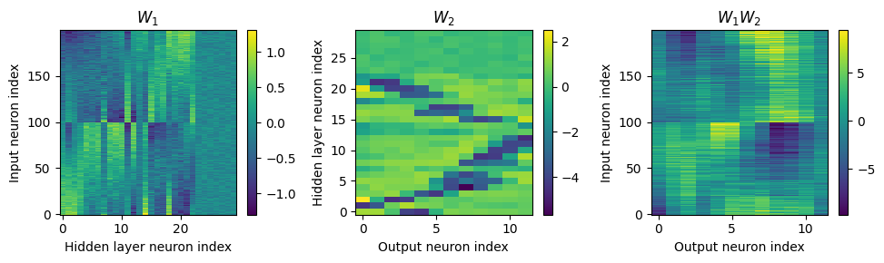
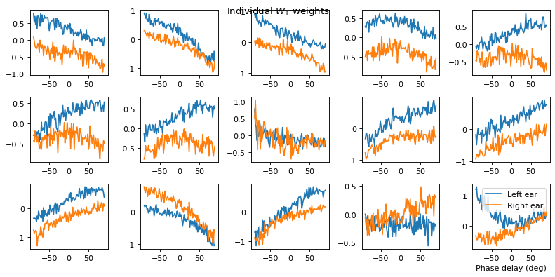
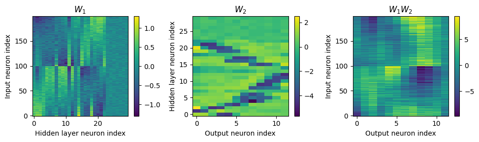
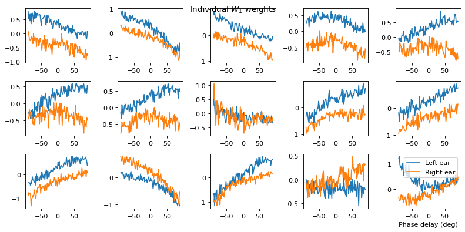
vis(snn_dth)
Want loss for epoch 1 to be about 2.48, multiply m by constant to get this
Epoch 1: loss=2.38769
Epoch 2: loss=1.66242
Epoch 3: loss=1.33113
Epoch 4: loss=1.14439
Epoch 5: loss=1.03367
Epoch 6: loss=0.95739
Epoch 7: loss=0.88704
Epoch 8: loss=0.83954
Epoch 9: loss=0.79568
Epoch 10: loss=0.75907
Chance accuracy level: 8.3%
Train classifier accuracy: 73.0%
Train absolute error: 5.6 deg
Test classifier accuracy: 50.7%
Test absolute error: 9.4 deg
vis(snn_dth, model_args={'tau': 2*ms, 'tau_t': 2*ms})
Want loss for epoch 1 to be about 2.48, multiply m by constant to get this
Epoch 1: loss=2.07747
Epoch 2: loss=1.42444
Epoch 3: loss=1.11230
Epoch 4: loss=0.94418
Epoch 5: loss=0.83510
Epoch 6: loss=0.75168
Epoch 7: loss=0.68862
Epoch 8: loss=0.63339
Epoch 9: loss=0.59529
Epoch 10: loss=0.55417
Chance accuracy level: 8.3%
Train classifier accuracy: 89.4%
Train absolute error: 4.2 deg
Test classifier accuracy: 85.4%
Test absolute error: 4.4 deg
vis(snn_original, model_args={'reset': False})
Want loss for epoch 1 to be about 2.48, multiply m by constant to get this
Epoch 1: loss=2.40062
Epoch 2: loss=1.28023
Epoch 3: loss=0.89524
Epoch 4: loss=0.77486
Epoch 5: loss=0.70595
Epoch 6: loss=0.66234
Epoch 7: loss=0.62293
Epoch 8: loss=0.60249
Epoch 9: loss=0.56536
Epoch 10: loss=0.56614
Chance accuracy level: 8.3%
Train classifier accuracy: 79.4%
Train absolute error: 5.0 deg
Test classifier accuracy: 33.9%
Test absolute error: 14.7 deg
vis(snn_original, model_args={'tau': 2*ms, 'reset': False})
Want loss for epoch 1 to be about 2.48, multiply m by constant to get this
Epoch 1: loss=1.92435
Epoch 2: loss=1.16450
Epoch 3: loss=0.90717
Epoch 4: loss=0.76186
Epoch 5: loss=0.65429
Epoch 6: loss=0.57840
Epoch 7: loss=0.50956
Epoch 8: loss=0.46623
Epoch 9: loss=0.42350
Epoch 10: loss=0.39557
Chance accuracy level: 8.3%
Train classifier accuracy: 90.9%
Train absolute error: 4.0 deg
Test classifier accuracy: 86.0%
Test absolute error: 4.2 deg
vis(snn_dth, model_args={'reset': False})
Want loss for epoch 1 to be about 2.48, multiply m by constant to get this
Epoch 1: loss=2.38518
Epoch 2: loss=1.14402
Epoch 3: loss=0.88273
Epoch 4: loss=0.75445
Epoch 5: loss=0.66793
Epoch 6: loss=0.61421
Epoch 7: loss=0.58513
Epoch 8: loss=0.50360
Epoch 9: loss=0.46970
Epoch 10: loss=0.45387
Chance accuracy level: 8.3%
Train classifier accuracy: 83.0%
Train absolute error: 4.7 deg
Test classifier accuracy: 67.6%
Test absolute error: 6.2 deg
 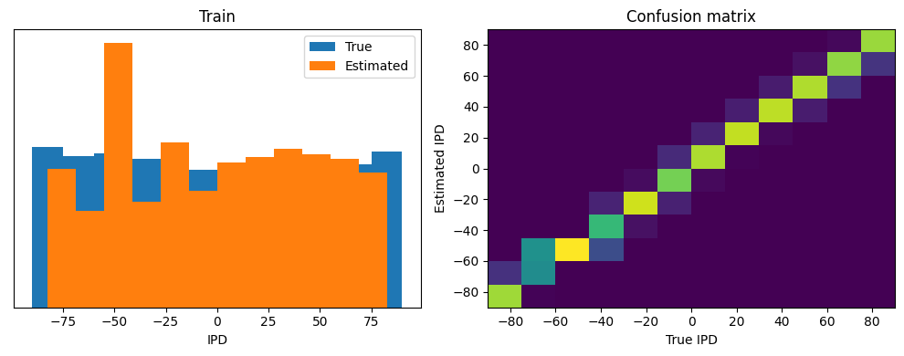
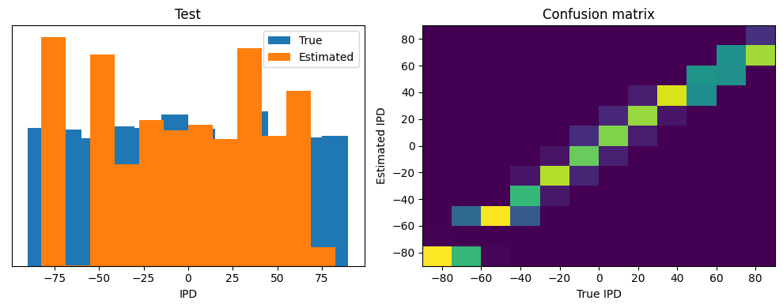
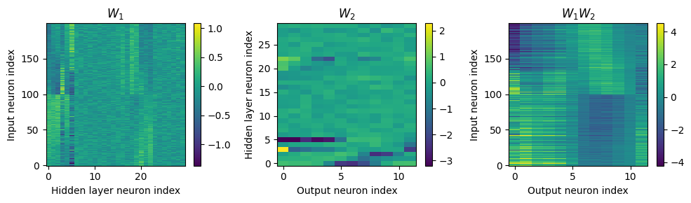
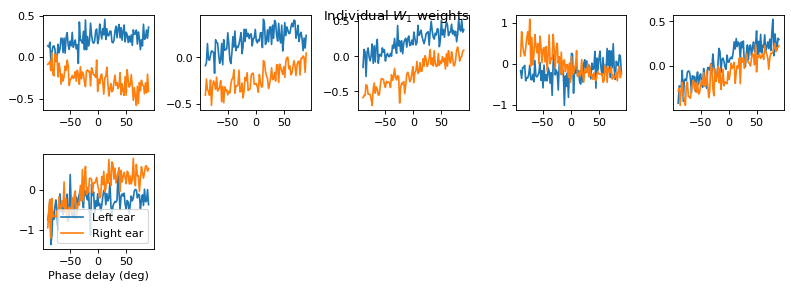
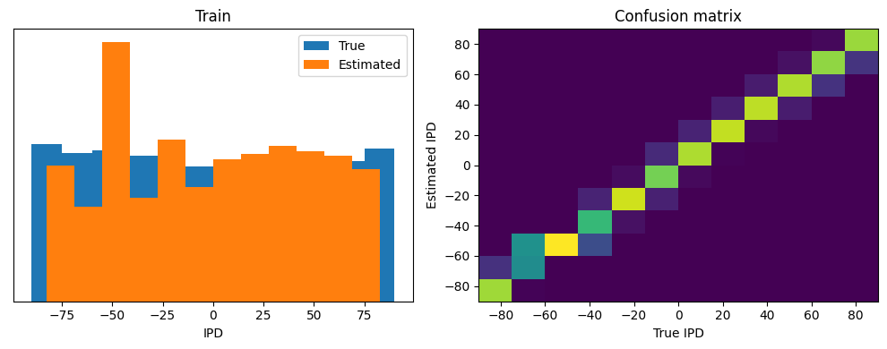
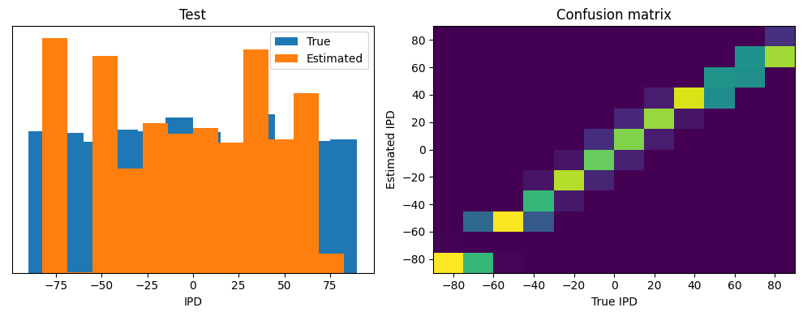
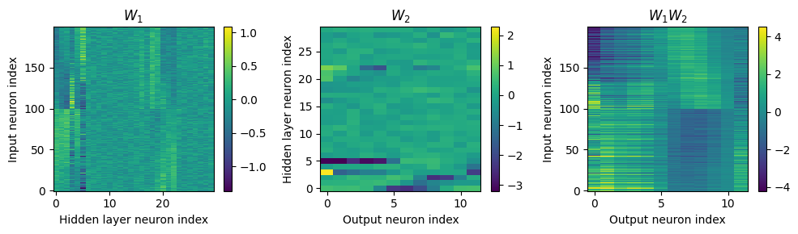
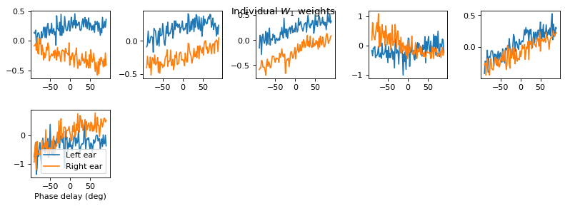
vis(snn_dth, model_args={'tau': 2*ms, 'tau_t': 2*ms, 'reset': False})
Want loss for epoch 1 to be about 2.48, multiply m by constant to get this
Epoch 1: loss=1.92113
Epoch 2: loss=1.13287
Epoch 3: loss=0.85042
Epoch 4: loss=0.71217
Epoch 5: loss=0.62477
Epoch 6: loss=0.56385
Epoch 7: loss=0.50425
Epoch 8: loss=0.46258
Epoch 9: loss=0.42641
Epoch 10: loss=0.40255
Chance accuracy level: 8.3%
Train classifier accuracy: 91.0%
Train absolute error: 4.0 deg
Test classifier accuracy: 87.6%
Test absolute error: 4.2 deg